Academia de Studii Economice din București IDA Institute Digital Assets Blockchain Research Center AI4EFin Artificial Intelligence for Energy Finance Academia Română, Institutul de Prognoză Economică MSCA Digital Finance
PSR: Probabilistic Sharpe Ratio (raportul Sharpe probabilistic)
QGB: Quantile Gradient Boosting (gradient boosting cu pierdere cuantilică)
QLIKE: Quasi-LIKElihood (loss function) — funcția de pierdere de tip cvasi-verosimilitate
QR: Quantile Regression (regresie cuantilică)
RBF: Radial Basis Function (network) — rețea cu funcții de bază radiale
RF: Random Forest (pădure aleatoare)
RMSE: Root Mean Squared Error (rădăcina erorii pătratice medii)
ROC: Receiver Operating Characteristic (curve) — curba caracteristică de operare
RV: Realised Variance (varianța realizată)
SFE: Statistics of Financial Markets, Exercises (Quantlet collection of the textbook) — colecția de Quantlet-uri a manualului Statistics of Financial Markets
Întrebarea: pot metodele flexibile de predicție să prognozeze riscul și randamentele financiare mai bine decît modelele din capitolele 7–10 și cum verificăm onest acest lucru?
machine learning (ML, învățare automată): algoritmi care învață din date o regulă de predicție, judecați după acuratețea pe date noi
Traseul capitolului
predicție și inferență; overfitting, deplasare și varianță; validarea pentru serii de timp fără look-ahead bias
ridge și lasso; arbori de decizie, random forest, gradient boosting; rețele neuronale și modelul ARCH cu rețea neuronală din manual
trei aplicații: volatilitatea realizată, semnul randamentelor, VaR 1%; data snooping; o lucrare de referință
There are two cultures in the use of statistical modeling to reach conclusions from data. One assumes that the data are generated by a given stochastic data model. The other uses algorithmic models and treats the data mechanism as unknown.
Capitolele anterioare au construit modele statistice cu o structură fixată dinainte: distribuții pentru randamente, modele GARCH (generalised autoregressive conditional heteroskedasticity) pentru volatilitate, modele pentru VaR (value at risk). Învățarea automată (ML, machine learning) pornește din direcția opusă: alege din date o regulă de predicție flexibilă și o judecă după acuratețea ei pe date pe care nu le-a văzut. Întrebarea capitolului este dacă aceste metode prognozează riscul și randamentele financiare mai bine decît modelele din Capitolele 7–10 și cum se verifică onest un asemenea cîștig.
Răspunsul depinde de țintă. Pentru volatilitatea săptămînală a S&P 500, lasso și o rețea neuronală mică reduc eroarea pătratică a prognozelor cu 7,1% și 8,3% față de modelul HAR (heterogeneous autoregressive), iar diferențele sînt semnificative. Pentru Bitcoin, niciun model nu depășește HAR. Pentru semnul randamentului de mîine, niciun model nu este semnificativ mai bun decît regula „mereu creștere”, pe nicio piață studiată. Pentru VaR 1%, o regresie cuantilică liniară are rata corectă a depășirilor pe S&P 500, în timp ce varianta ei flexibilă duce lipsă de date în coadă.
Diferența dintre un rezultat real și unul aparent ține de validare. O partiție aleatoare a datelor produce un \(R^2\) de 34,5% pentru un mers aleator simulat, care nu are nimic de prezis; o schemă walk-forward dă pentru aceleași date un \(R^2\) negativ. Capitolul construiește de aceea, înaintea modelelor, regulile de evaluare: eșantioane separate în timp, repere simple, teste ale diferenței dintre prognoze și o corecție pentru numărul de modele încercate.
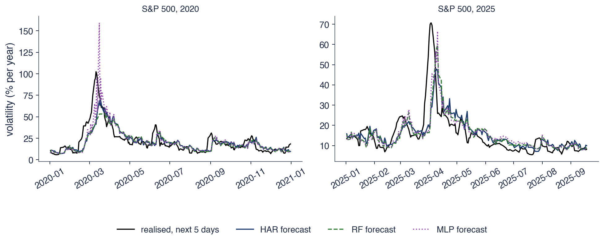
Volatilitatea realizată anualizată a S&P 500 din următoarele 5 zile și prognozele HAR, random forest și MLP (multilayer perceptron) făcute la închiderea fiecărei zile, în 2020 și 2025.
Ce veți putea face
Explicați diferența dintre predicție și inferență, precum și compromisul deplasare–varianță.
Construiți o evaluare walk-forward cu purging și recunoașteți look-ahead bias și leakage-ul.
Estimați ridge, lasso, un arbore de regresie, un random forest, gradient boosting și o rețea neuronală mică.
Comparați prognozele prin \(R^2\) în afara eșantionului, QLIKE și testul Diebold–Mariano, față de un reper adecvat.
Prognozați VaR 1% prin regresie cuantilică și corectați un raport Sharpe pentru numărul de strategii încercate.
RezumatIdeile principale, formulele și întrebări de autoevaluare.
Contribuția machine learning în statistică
Secțiunea așază învățarea automată în istoria statisticii. Pornește de la perceptronul din 1958, prezintă distincția lui Breiman între modelarea datelor și modelarea algoritmică, separă predicția de inferență și fixează notațiile învățării supervizate: variabile explicative, țintă, funcție de pierdere și hiperparametri. Se încheie cu o hartă a domeniilor din finanțe în care aceste metode ajută și a celor în care întîmpină dificultăți.
Rosenblatt (1958) a descris o mașină care învață să clasifice imagini ajustîndu-și ponderile după fiecare eroare. Perceptronul primește un vector de intrări \(x\), în versiunea originală semnalele unor fotocelule, și produce ieșirea 1 dacă \(w_0 + w^\top x > 0\) și 0 în caz contrar. Ponderile \(w\) și pragul \(w_0\) nu sînt fixate de proiectant, ci învățate din exemple: cînd mașina greșește, ponderile se modifică în direcția care ar fi corectat greșeala.
Mark I Perceptron, construit la Cornell în 1960, avea 400 de fotocelule, iar ponderile erau reglate de motoare electrice. Ideea centrală a supraviețuit acestei implementări mecanice: o regulă de decizie liniară, cu parametri estimați prin corectarea repetată a erorilor, este strămoșul neuronului din rețelele moderne prezentate în secțiunea 6.
Trei momente ulterioare marchează dezvoltarea domeniului. În 1986, Rumelhart, Hinton & Williams (1986) au arătat cum retropropagarea erorii (back-propagation) antrenează rețele cu straturi ascunse. În 2001 au apărut random forest (Breiman, 2001b) și gradient boosting (Friedman, 2001), metodele de arbori folosite în secțiunea 5. În 2024, Premiul Nobel pentru fizică a fost acordat lui Hopfield și Hinton pentru contribuțiile lor la rețelele neuronale.
Pe scurt
Rosenblatt (1958): o mașină care învață să clasifice imagini ajustîndu-și ponderile după fiecare eroare
perceptronul: ieșirea este \(1\) dacă \(w_0 + w^\top x > 0\) și \(0\) în caz contrar
\(x\): vectorul intrărilor (semnalele fotocelulelor); \(w\): ponderile lor, învățate din exemple; \(w_0\): termenul de prag; \(w^\top x = \sum_j w_jx_j\)
Mark I Perceptron (Cornell, 1960): 400 de fotocelule, ponderi reglate de motoare electrice
Breiman (2001a), statistician la Berkeley, descrie două moduri de a folosi datele. În cultura modelării datelor (data modelling), cercetătorul presupune un model stochastic, de exemplu regresia liniară \(y = x^\top\beta + \varepsilon\) sau un model GARCH, îl estimează și îi testează parametrii. Concluziile privesc parametrii, iar validitatea lor depinde de corectitudinea modelului presupus.
În cultura modelării algoritmice (algorithmic modelling), mecanismul care a generat datele este tratat ca necunoscut. Scopul este o regulă \(\hat f\) care prezice bine \(y\) pe date noi, iar o regulă este judecată după eroarea ei de predicție, nu după plauzibilitatea unui model. Arborii, random forest și rețelele neuronale aparțin acestei culturi.
Cursul a lucrat pînă acum în prima cultură, din Capitolul 2 pînă în Capitolul 11: distribuții, modele de volatilitate, teste de memorie lungă. Acest capitol adaugă a doua cultură și întreabă în ce condiții ea aduce un cîștig real pe datele financiare, unde zgomotul este mare și istoria disponibilă este una singură.
Pe scurt
Breiman (2001a), statistician la Berkeley, descrie două culturi
modelarea datelor: presupunem un model stochastic (regresia liniară \(y = x^\top\beta + \varepsilon\), GARCH), îl estimăm și îi testăm parametrii
modelarea algoritmică: tratăm mecanismul ca necunoscut; căutăm o regulă \(\hat f\) care prezice bine \(y\) pe date noi
Inferența întreabă dacă un coeficient \(\beta_j\) este diferit de zero și cît de mare este efectul, folosind erori standard și teste, ca în Capitolul 6. Un exemplu din curs este efectul de levier (leverage effect): parametrul de asimetrie al unui GJR-GARCH (Glosten–Jagannathan–Runkle GARCH), din Capitolul 9, spune dacă scăderile de preț cresc volatilitatea mai mult decît creșterile.
Predicția întreabă cît de aproape este prognoza \(\hat y\) de valoarea \(y\) pe date pe care modelul nu le-a văzut niciodată. Exemplele tipice sînt volatilitatea săptămînii viitoare și VaR 1% de mîine. Coeficienții unui model de predicție pot fi greu de interpretat, uneori nici nu există sub forma unor parametri cu sens economic; contează doar eroarea pe date noi.
Cele două obiective pot intra în conflict. Un estimator deplasat, precum ridge sau lasso din secțiunea 4, poate avea o eroare de predicție mai mică decît estimatorul nedeplasat OLS (ordinary least squares), deoarece cîștigă mai mult prin reducerea varianței decît pierde prin deplasare. Invers, un model care prezice bine nu demonstrează un mecanism cauzal: el poate exploata o corelație stabilă fără a spune nimic despre cauza ei.
Pe scurt
Inferența: este \(\beta_j \ne 0\)? cît de mare este efectul? (erori standard, teste, Capitolul 6)
exemplu: există efectul de levier (GJR-GARCH, Capitolul 9)?
Predicția: cît de aproape este \(\hat y\) de \(y\) pe date pe care modelul nu le-a văzut niciodată?
exemplu: volatilitatea săptămînii viitoare; VaR 1% de mîine
coeficienții pot fi greu de interpretat; contează eroarea pe date noi
Cele două obiective pot intra în conflict
un estimator deplasat (ridge, lasso) poate prezice mai bine decît estimatorul nedeplasat OLS
un model care prezice bine nu demonstrează un mecanism cauzal
Învățarea supervizată: notații și funcția de pierdere (1/2)
Învățarea supervizată (supervised learning) pornește de la perechi \((x_t, y_t)\),\(t = 1, \dots, n\), unde \(t\) indexează observațiile, de exemplu zile sau săptămîni. Vectorul \(x_t \in \mathbb{R}^p\) conține variabilele explicative (features): \(p\) numere cunoscute la momentul \(t\), cum ar fi volatilitățile și randamentele trecute. Ținta (target) \(y_t\) este mărimea pe care vrem să o prognozăm, de exemplu volatilitatea săptămînii viitoare.
Condiția „cunoscute la momentul \(t\)” este esențială în finanțe. O variabilă explicativă care folosește, chiar și indirect, informație de după momentul \(t\) face ca prognoza să pară mai bună decît ar putea fi în timp real; secțiunea 3 tratează această eroare în detaliu.
Problemele se împart după natura țintei. În regresie, \(y\) este o variabilă continuă, de exemplu o volatilitate sau un randament. În clasificare, \(y\) este o clasă: creștere sau scădere, neplată sau plată, ca în modelele de scoring din Capitolul 12. Metodele capitolului au versiuni pentru ambele tipuri de probleme.
Învățarea înseamnă alegerea, dintr-o familie de reguli candidate \(\mathcal{F}\), a regulii \(\hat f\) care minimizează pierderea medie \(\frac1n\sum_t L(y_t, f(x_t))\). Funcția de pierdere (loss function) \(L(y, \hat y)\) dă costul prognozei \(\hat y\) atunci cînd se observă \(y\). Familia \(\mathcal{F}\) poate fi, de exemplu, mulțimea tuturor regresiilor liniare sau a tuturor arborilor de adîncime 3; cu cît familia este mai bogată, cu atît regula aleasă se poate adapta mai mult datelor.
Funcția de pierdere trebuie să corespundă scopului prognozei. Eroarea pătratică \((y - \hat y)^2\), a cărei medie este MSE (mean squared error), este alegerea implicită pentru regresie. Pentru varianțe, cursul a folosit QLIKE din Capitolul 8; pentru VaR, pierderea cuantilică (pinball loss) din Capitolul 10; pentru probabilități, log loss din Capitolul 12.
Parametrii unei reguli, precum coeficienții sau ponderile, se învață prin estimare. Un hiperparametru (hyperparameter) se alege înainte de estimare și controlează complexitatea regulii: adîncimea unui arbore, penalizarea \(\lambda\) din regresia ridge, numărul de neuroni al unei rețele. Alegerea hiperparametrilor este ea însăși o formă de estimare și are nevoie de date separate, după cum arată secțiunile următoare.
Pe scurt
Învățarea constă în alegerea regulii \(\hat f\) din familia \(\mathcal{F}\) care minimizează pierderea medie \(\frac1n\sum_t L(y_t, f(x_t))\)
\(f(x_t)\): prognoza dată de regula \(f\) pentru observația \(t\); \(L(y, \hat y)\): costul prognozei \(\hat y\) cînd se observă \(y\)
\(\mathcal{F}\): regulile candidate (toate regresiile liniare, toți arborii de adîncime 3); \(\hat f\): regula aleasă pe baza datelor
Funcțiile de pierdere folosite în curs
eroarea pătratică \((y - \hat y)^2\) (MSE, mean squared error); QLIKE pentru varianțe (Capitolul 8)
pierderea cuantilică (pinball loss) pentru VaR (Capitolul 10); log loss pentru probabilități (Capitolul 12)
Un hiperparametru se alege înainte de estimare
exemple: adîncimea arborelui, penalizarea \(\lambda\), numărul de neuroni
parametrii (coeficienți, ponderi) se învață prin estimare
Unde ajută machine learning în finanțe și unde întîmpină dificultăți
Machine learning are șanse de succes atunci cînd ținta are structură și datele sînt suficiente. Volatilitatea este un asemenea caz: Capitolele 8 și 9 au arătat că ea este persistentă, deci o mare parte din ea poate fi prognozată, iar efectele neliniare sînt plauzibile. Un al doilea caz sînt secțiunile transversale cu mii de acțiuni și multe caracteristici, ca în studiul de caz din secțiunea 11.
Dificultatea principală este un raport semnal–zgomot (signal-to-noise ratio) mic. Randamentele zilnice sînt aproape imprevizibile (Capitolul 7), iar un model flexibil aplicat lor învață mai ales zgomotul. Piețele își schimbă regimurile, iar crizele aduc situații absente din istoria de antrenare, astfel încît trecutul este un set de antrenare imperfect pentru viitor.
Există și o limită de principiu: avem o singură istorie a prețurilor. Experimentul nu poate fi repetat, observațiile sînt dependente în timp, iar numărul real de episoade independente, de exemplu de crize, este mic. Aceste trăsături explică de ce validarea ocupă în capitol un loc la fel de important ca modelele.
Pe scurt
Ajută: ținte cu structură și cu suficiente date
volatilitatea este persistentă (capitolele 8–9): este mult de prezis, iar efectele neliniare sînt posibile
secțiuni transversale cu mii de acțiuni și multe caracteristici (studiul de caz)
Dificultăți: un raport semnal–zgomot mic
randamentele zilnice sînt aproape imprevizibile (Capitolul 7): un model flexibil învață zgomotul
piețele se schimbă (regimuri, crize): trecutul este un set de antrenare imperfect
o singură istorie a prețurilor: experimentul nu poate fi repetat, iar observațiile sînt dependente
Sinteza secțiunii
Machine learning adaugă statisticii cultura modelării algoritmice: o regulă de predicție aleasă din date și judecată după eroarea pe date noi. Ingredientele sînt variabilele explicative, ținta, funcția de pierdere și hiperparametrii. În finanțe, metoda are șanse acolo unde ținta are structură, ca volatilitatea, și întîmpină dificultăți acolo unde zgomotul domină, ca la randamentele zilnice. Secțiunea următoare explică de ce flexibilitatea are un cost.
Overfitting, deplasare și varianță
Secțiunea arată de ce un model mai flexibil nu este automat un model mai bun. Distinge eroarea de antrenare de eroarea de test, derivă descompunerea erorii de test în deplasare, varianță și zgomot și ilustrează compromisul dintre ele printr-o simulare cu arbori de regresie de adîncimi diferite.
Eroarea de antrenare (training error) este pierderea medie pe datele folosite la estimare; eroarea de test (test error) este pierderea medie pe date noi, generate de același proces. Prima scade întotdeauna atunci cînd modelul devine mai flexibil, pentru că o familie mai bogată de reguli conține și regulile mai simple. De aceea, eroarea de antrenare nu poate servi la compararea modelelor de complexitate diferită.
Supraînvățarea (overfitting) apare cînd modelul învață, pe lîngă semnal, și zgomotul eșantionului de antrenare. Simptomul este o eroare de antrenare mică însoțită de o eroare de test mare. Cazul extrem este un arbore cu cîte o frunză pentru fiecare observație: el reproduce exact datele de antrenare, deci are eroare de antrenare zero, dar prognozele lui pentru observații noi sînt slabe.
Subînvățarea (underfitting) este eroarea opusă: modelul este prea rigid pentru a surprinde semnalul. Un exemplu este o prognoză constantă a volatilității într-o piață cu grupare a volatilității (volatility clustering): ea ignoră exact structura care face volatilitatea previzibilă.
Pe scurt
Eroarea de antrenare: pierderea medie pe datele folosite la estimare; eroarea de test: pe date noi din același proces
eroarea de antrenare scade întotdeauna cînd modelul devine mai flexibil
Overfitting: modelul învață zgomotul din eșantionul de antrenare
simptom: o eroare de antrenare mică și o eroare de test mare
un arbore cu cîte o frunză pentru fiecare observație are eroare de antrenare zero, dar prognoze slabe
Underfitting: modelul este prea rigid pentru a surprinde semnalul
exemplu: o prognoză constantă a volatilității într-o lume cu volatility clustering
Presupunem că datele sînt generate de \(y = f(x) + \varepsilon\), cu \(E[\varepsilon] = 0\) și \(\mathrm{Var}(\varepsilon) = \sigma^2\). Funcția \(f\) este relația adevărată și necunoscută dintre \(x\) și \(y\), iar \(\varepsilon\) este zgomotul, imprevizibil pe baza lui \(x\). Estimația \(\hat f\) se obține pe un eșantion de antrenare aleator; un alt eșantion ar da o altă estimație, deci \(\hat f(x_0)\) este o variabilă aleatoare.
Pentru un punct nou \(x_0\), cu \(y_0 = f(x_0) + \varepsilon_0\), eroarea de test așteptată se descompune în trei termeni:
Media se ia peste toate eșantioanele de antrenare posibile și peste zgomotul \(\varepsilon_0\). Primul termen este pătratul deplasării (bias): distanța dintre estimația medie și valoarea adevărată. Al doilea este varianța (variance): cît se modifică \(\hat f(x_0)\) de la un eșantion la altul. Al treilea este zgomotul, care nu depinde de model.
Derivarea pornește de la scrierea erorii în punctul \(x_0\) ca sumă de trei termeni: \(y_0 - \hat f = (f - E\hat f) + (E\hat f - \hat f) + \varepsilon_0\). Prin ridicare la pătrat și mediere, cele trei pătrate dau deplasarea la pătrat, varianța și \(\sigma^2\). Termenii micști au media zero: primul termen este o constantă, \(E[E\hat f - \hat f] = 0\), iar \(\varepsilon_0\) este independent de eșantionul de antrenare.
Descompunerea (13.1) explică compromisul deplasare–varianță (bias–variance trade-off). Un model rigid are deplasare mare și varianță mică: dă aproape aceeași prognoză pe orice eșantion, dar sistematic greșită. Un model flexibil are deplasare mică și varianță mare: se potrivește bine în medie, dar prognoza lui depinde puternic de eșantionul concret. Complexitatea optimă echilibrează cei doi termeni.
Al treilea termen, \(\sigma^2\), este un prag minim: niciun model nu coboară sub el. Pentru randamentele zilnice, \(\sigma^2\) reprezintă aproape toată eroarea, deoarece partea previzibilă \(f(x)\) este foarte mică. În această situație, orice varianță suplimentară adusă de un model flexibil se vede direct în eroarea de test, iar cîștigul posibil din reducerea deplasării este mic.
Pe scurt
Derivarea: scriem \(y_0 - \hat f = (f - E\hat f) + (E\hat f - \hat f) + \varepsilon_0\), toate în punctul \(x_0\)
ridicăm la pătrat și luăm media: cele trei pătrate dau deplasarea\(^2\), varianța și \(\sigma^2\)
termenii micști au media 0: \(E[E\hat f - \hat f] = 0\), iar \(\varepsilon_0\) este independent de eșantionul de antrenare
Interpretarea descompunerii
un model rigid: deplasare mare, varianță mică
un model flexibil: deplasare mică, varianță mare
\(\sigma^2\) este pragul minim: niciun model nu coboară sub el; la randamentele zilnice, \(\sigma^2\) reprezintă aproape toată eroarea
Simularea face descompunerea vizibilă. Datele sînt generate de \(y = \sin(2\pi x) + \varepsilon\), cu varianța zgomotului \(\sigma^2 = 0{,}09\) și \(n = 80\) de observații, iar experimentul se repetă pe 300 de eșantioane de antrenare. Graficul din stînga arată un singur eșantion și arborii de adîncime 1, 3 și 10 estimați pe el; arborii de regresie sînt definiți în secțiunea 5.
Arborele de adîncime 1 are o singură împărțire și nu poate urmări forma sinusoidei: deplasarea lui la pătrat este 0,070, iar varianța 0,031. Arborele de adîncime 10 urmărește fiecare punct: deplasarea la pătrat este practic zero (0,000), dar varianța crește la 0,090, cît varianța zgomotului. Între cele două extreme, eroarea de test este minimă la adîncimea 3, cu valoarea 0,132.
Valoarea minimă, 0,132, este cu puțin peste pragul \(\sigma^2 = 0{,}09\): în această simulare semnalul este puternic și un model de complexitate medie îl surprinde aproape complet. Graficul arată cele trei componente din (13.1) în funcție de adîncime și forma de U a erorii de test care rezultă din suma lor.
Pe scurt
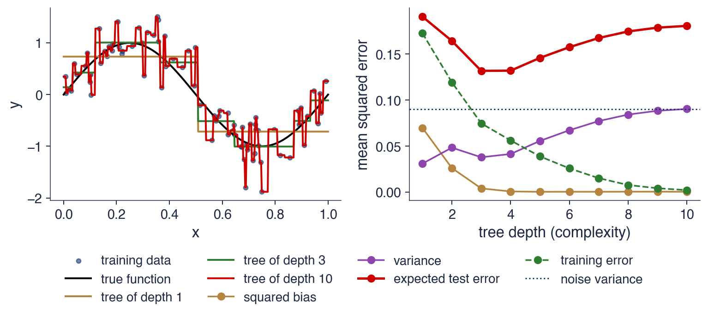
Simulare: \(y = \sin(2\pi x) + \varepsilon\), \(\sigma^2 = 0{,}09\), \(n = 80\), 300 de eșantioane de antrenare; stînga: un eșantion cu arbori de adîncime 1, 3 și 10
Adîncimea 1: deplasare\(^2\)\(0{,}070\), varianță \(0{,}031\); adîncimea 10: deplasare\(^2\)\(0{,}000\), varianță \(0{,}090\); eroarea de test este minimă la adîncimea 3 (\(0{,}132\))
Pe măsură ce adîncimea crește, eroarea de antrenare scade de la 0,172 la 0,002. Eroarea de test scade la început, cît timp reducerea deplasării domină, apoi crește, cînd creșterea varianței devine mai importantă. Arborele de adîncime 10 are o eroare de antrenare aproape zero și o eroare de test de 0,180, mai mare decît cea a arborelui de adîncime 3.
Consecința practică este că un model nu se alege niciodată după eroarea de antrenare: aceasta ar favoriza mereu modelul cel mai flexibil. Complexitatea este un hiperparametru și trebuie aleasă pe date care nu au fost folosite la estimarea parametrilor.
În finanțe, zgomotul este mult mai mare în raport cu semnalul decît în această simulare. Minimul curbei în U se deplasează atunci spre modele mai simple, astfel încît modelul cel mai bun este de obicei mai simplu decît arborele de adîncime 3 din exemplu.
Pe scurt
Eroarea de antrenare scade de la \(0{,}172\) la \(0{,}002\); eroarea de test scade, apoi crește
adîncimea 10 are eroare de antrenare aproape zero și o eroare de test de \(0{,}180\), mai mare decît la adîncimea 3
Consecințe practice
nu alegeți niciodată un model după eroarea de antrenare
complexitatea este un hiperparametru: se alege pe date care nu au fost folosite la estimare
în finanțe zgomotul este mare, deci cel mai bun model este de obicei mai simplu decît în această simulare
Sinteza secțiunii
Eroarea de test se descompune în deplasare la pătrat, varianță și zgomot, (13.1). Flexibilitatea reduce deplasarea și mărește varianța, de unde forma de U a erorii de test, iar zgomotul fixează un prag pe care niciun model nu îl coboară. Complexitatea se alege deci pe date neutilizate la estimare, ceea ce cere o schemă de validare potrivită pentru seriile de timp, subiectul secțiunii următoare.
Validarea pentru serii de timp
Secțiunea stabilește regulile după care se evaluează toate modelele capitolului. Definește rolurile eșantioanelor de antrenare, validare și test, cele două erori care fac un model să pară mai bun decît este, look-ahead bias și leakage, și schemele de validare potrivite pentru serii de timp. Un experiment cu un mers aleator simulat arată cît de mare poate fi efectul unei scheme greșite.
Datele au trei roluri. Eșantionul de antrenare (training sample) servește la estimarea parametrilor fiecărui model candidat. Eșantionul de validare (validation sample) servește la alegerea hiperparametrilor și a modelului. Eșantionul de test (test sample) servește la o singură măsurare a erorii modelului ales în final; doar această măsurare estimează onest performanța pe date noi.
Orice decizie luată pe baza eșantionului de test îl transformă într-un eșantion de validare. A încerca zece modele pe datele de test și a raporta cel mai bun nu mai este testare, ci selecție de model, iar eroarea raportată este optimistă. Secțiunea 10 cuantifică acest optimism pentru rapoartele Sharpe.
Validarea încrucișată K-fold (K-fold cross-validation, CV) împarte datele în \(K\) părți; fiecare parte este pe rînd setul de validare, iar celelalte \(K - 1\) părți antrenează modelul. Schema este validă pentru date i.i.d. Pentru serii de timp, Bergmeir, Hyndman & Koo (2018) arată că ea rămîne validă doar în condiții stricte, cînd în erorile modelului nu mai există dependență.
Pe scurt
Trei roluri pentru date
antrenare: estimăm parametrii fiecărui model candidat
validare: alegem hiperparametrii și modelul
test: măsurăm o singură dată eroarea alegerii finale
Orice decizie luată pe baza eșantionului de test îl transformă într-un eșantion de validare
a încerca zece modele pe datele de test și a raporta cel mai bun înseamnă selecție de model, nu testare
Validarea încrucișată K-fold (cross-validation): împărțim datele în \(K\) părți; fiecare parte este o dată setul de validare, iar celelalte antrenează modelul
validă pentru date i.i.d.; pentru o serie de timp doar în condiții stricte (fără dependență rămasă în erori) Bergmeir, Hyndman & Koo (2018)
Look-ahead bias apare cînd prognoza pentru ziua \(t\) folosește informație care nu era disponibilă la închiderea zilei \(t - 1\). Sursele obișnuite sînt variabilele calculate cu prețuri viitoare, de exemplu o medie mobilă centrată sau o medie pe tot eșantionul, scalarea sau standardizarea cu statisticile întregului eșantion, datele revizuite ulterior și folosirea componenței de azi a unui indice pentru trecut (survivorship).
Leakage-ul este o eroare înrudită: informația despre ținta de test ajunge în eșantionul de antrenare. Cazul tipic sînt țintele suprapuse. Randamentul pe 21 de zile care începe în ziua \(t\) și cel care începe în ziua \(t + 1\) au 20 de zile comune. Dacă o partiție aleatoare pune ziua \(t + 1\) în antrenare și ziua \(t\) în test, modelul a văzut aproape tot răspunsul înainte de a fi testat.
Ambele erori fac un model să pară mai bun decît poate fi în timp real, iar niciuna nu se vede în eroarea de antrenare sau în codul care rulează fără erori. Ele trebuie excluse prin construcția schemei de validare, nu descoperite ulterior.
Pe scurt
Look-ahead bias: prognoza pentru ziua \(t\) folosește informație care nu era disponibilă la închiderea zilei \(t - 1\)
variabile calculate cu prețuri viitoare (o medie mobilă centrată, o medie pe tot eșantionul)
scalare sau standardizare cu statistici ale întregului eșantion; date revizuite; componența de azi a indicelui (survivorship)
Leakage: informația despre ținta de test ajunge în eșantionul de antrenare
ținte suprapuse: randamentul pe 21 de zile de la ziua \(t\) și cel de la ziua \(t + 1\) au 20 de zile comune
o partiție aleatoare pune ziua \(t + 1\) în antrenare și ziua \(t\) în test: modelul a văzut răspunsul
Ambele fac un model să pară mai bun decît poate fi în timp real
Graficul compară trei scheme. Validarea walk-forward antrenează modelul pe trecut, îl testează pe blocul următor și apoi avansează. În varianta cu fereastră extinsă (expanding window), fiecare pas păstrează tot trecutul în eșantionul de antrenare. Schema imită exact situația unui analist care face prognoze în timp real.
A doua schemă este K-fold cu purging și embargo, propusă de López de Prado (2018). Blocurile de test pot fi și în mijlocul eșantionului, dar din antrenare se elimină rîndurile ale căror ținte se suprapun cu blocul de test (purging) și cîteva rînduri de după el (embargo). Astfel, nicio țintă din antrenare nu conține informație din perioada de test.
A treia schemă, K-fold aleator, apare în grafic ca termen de comparație: ea amestecă zilele și ignoră ordinea temporală. Experimentul de pe slide-urile următoare arată ce produce această schemă pe ținte suprapuse.
Pe scurt
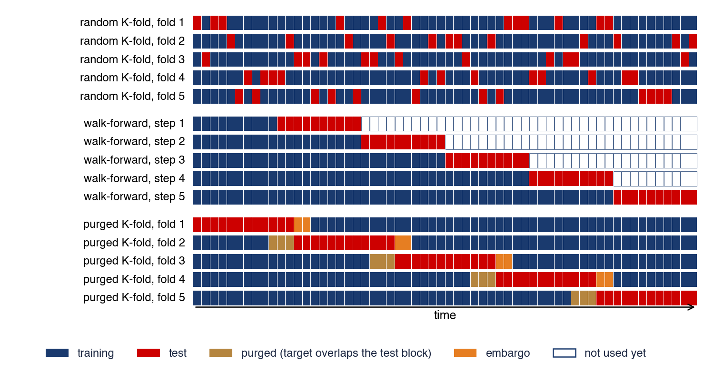
Walk-forward: antrenăm pe trecut, testăm pe blocul următor și avansăm; fereastra extinsă păstrează tot trecutul
K-fold cu purging și embargoLópez de Prado (2018): eliminăm rîndurile de antrenare ale căror ținte se suprapun cu blocul de test (purging) și cîteva rînduri de după el (embargo)
Pentru S&P 500, capitolul folosește date începînd cu 8 aprilie 2008 și cîte o partiție pentru fiecare an calendaristic începînd cu 2013, în total 14 partiții. Modelul se reestimează în fiecare ianuarie pe toate zilele anterioare, cu fereastră extinsă, și se testează pe fiecare zi a anului respectiv.
Ținta este varianța medie din următoarele 5 zile, deci ultimele rînduri dinaintea anului de test au ținte care se termină în acel an. Purging-ul le elimină: pentru 2013 se scot ultimele 5 rînduri de antrenare, de la 24 decembrie 2012. Partiția pentru 2013 antrenează astfel pe 1 188 de zile și testează pe 252, iar partiția pentru 2026 antrenează pe 4 458 de zile.
Hiperparametrii se aleg în interiorul fiecărei ferestre de antrenare, printr-o împărțire walk-forward doar a datelor de antrenare; anul de test nu influențează nicio alegere. Nu este nevoie de embargo, deoarece blocul de test vine întotdeauna după cel de antrenare și nu există rînduri de antrenare situate după perioada de test.
Pe scurt
Schema folosită în acest capitol pentru S&P 500 (date din 8 aprilie 2008)
cîte o partiție pentru fiecare an calendaristic din 2013: 14 partiții; modelul se reestimează în fiecare ianuarie
fereastra de antrenare: toate zilele anterioare (extinsă); test: fiecare zi a anului
Purging: ținta este varianța medie din următoarele 5 zile
pentru 2013 se elimină ultimele 5 rînduri de antrenare (de la 24 decembrie 2012): țintele lor ajung în 2013
partiția pentru 2013 antrenează pe 1 188 de zile și testează pe 252; partiția pentru 2026 antrenează pe 4 458 de zile
În interiorul fiecărei ferestre de antrenare, hiperparametrii se aleg printr-o împărțire walk-forward doar a datelor de antrenare
nu este nevoie de embargo: blocul de test vine întotdeauna după cel de antrenare
Leakage în practică: partiții aleatoare pe ținte suprapuse
Experimentul folosește un random forest pentru randamentul din următoarele 21 de zile, cu variabile explicative construite din randamentele și volatilitățile trecute. Performanța se măsoară prin \(R^2\) în afara eșantionului față de media de antrenare, definit în secțiunea 7: o valoare pozitivă înseamnă o eroare pătratică mai mică decît a mediei, una negativă o eroare mai mare.
Primul set de date este un mers aleator simulat, în care randamentele viitoare sînt independente de trecut. Validarea 5-fold aleatoare raportează un \(R^2\) de 34,5%, iar validarea walk-forward un \(R^2\) de −26,1%. Pe S&P 500, cu 6 631 de zile, cele două valori sînt 36,9% și −38,0%.
Rezultatele pe datele reale sînt aproape identice cu cele pe mersul aleator. Asemănarea arată că \(R^2\) mare al partițiilor aleatoare nu reflectă o predictibilitate a S&P 500, ci schema de validare.
Pe scurt
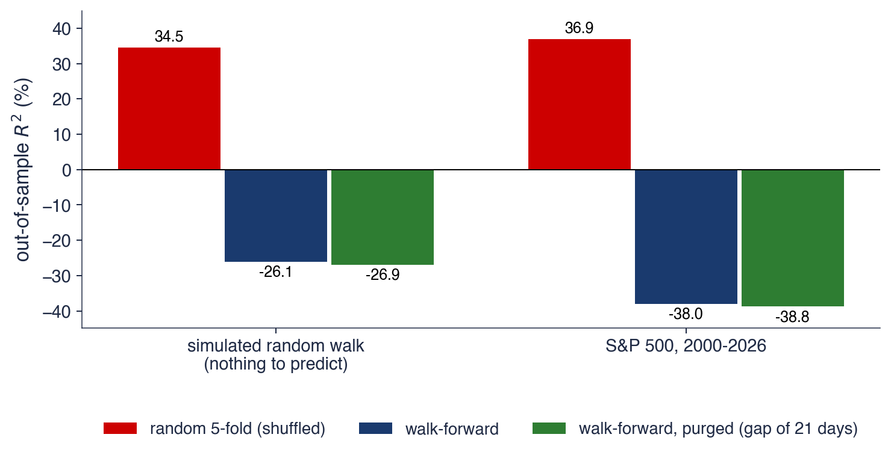
Random forest pentru randamentul din următoarele 21 de zile, pe baza randamentelor și volatilităților trecute; \(R^2\) în afara eșantionului față de media de antrenare
Mers aleator simulat: 5-fold aleator \(34{,}5\%\), walk-forward \(-26{,}1\%\); S&P 500 (6 631 de zile): \(36{,}9\%\) și \(-38{,}0\%\)
Mersul aleator nu are nimic de prezis, totuși partițiile aleatoare raportează un \(R^2\) de 34,5%. Explicația este leakage-ul: random forest memorează zilele vecine din antrenare, ale căror ținte au 20 din 21 de randamente comune cu ziua de test. Prognoza „ghicește” ținta pentru că a văzut-o deja aproape în întregime.
Validarea walk-forward dă un \(R^2\) negativ: random forest învață zgomotul anilor de antrenare și este mai slab decît simpla medie de antrenare. Purging-ul, adică eliminarea a 21 de zile la granița dintre antrenare și test, schimbă puțin rezultatul, deoarece în walk-forward doar rîndurile de la graniță au ținte suprapuse cu perioada de test.
Regula care rezultă este simplă: cu ținte suprapuse sau cu date dependente, ordinea temporală nu se amestecă niciodată. Un \(R^2\) mare obținut cu partiții aleatoare pe asemenea date nu spune nimic despre capacitatea de prognoză a modelului.
Pe scurt
Mersul aleator nu are nimic de prezis, totuși partițiile aleatoare raportează \(R^2 = 34{,}5\%\)
random forest memorează zilele vecine, ale căror ținte au 20 din 21 de randamente comune cu ziua de test
Walk-forward dă un \(R^2\) negativ: random forest învață zgomotul și este inferior mediei de antrenare
purging-ul (eliminarea a 21 de zile) schimbă puțin rezultatul, deoarece în walk-forward doar rîndurile de la graniță se suprapun
Regulă: cu ținte suprapuse sau date dependente, nu amestecați niciodată ordinea temporală
Sinteza secțiunii
Datele au trei roluri, antrenare, validare și test, iar eșantionul de test se folosește o singură dată. Look-ahead bias și leakage-ul fac un model să pară mai bun decît poate fi în timp real; pe ținte suprapuse, partițiile aleatoare dau un \(R^2\) de peste 30% chiar pentru zgomot pur. Toate rezultatele empirice ale capitolului folosesc de aceea validarea walk-forward cu purging. Secțiunea următoare începe seria modelelor cu regresia penalizată.
Regresia penalizată: ridge și lasso
Secțiunea pornește de la instabilitatea estimatorului OLS cînd variabilele explicative sînt multe și corelate. Introduce regresia ridge și lasso, care adaugă o penalizare a coeficienților, le calculează pe un exemplu cu o singură variabilă și le aplică variabilelor de volatilitate ale S&P 500.
unde \(X\) este matricea \(n \times p\) cu rîndul \(t\) egal cu \(x_t^\top\), iar \(y\) este vectorul țintelor. Estimatorul este nedeplasat, dar varianța lui, \(\sigma^2(X^\top X)^{-1}\), cu \(\sigma^2\) varianța erorii, crește foarte mult cînd variabilele sînt multe sau puternic corelate, pentru că matricea \(X^\top X\) devine aproape singulară.
Variabilele de volatilitate sînt un exemplu tipic: varianța realizată de azi, cea din această săptămînă și cea din această lună se mișcă împreună. OLS poate atunci produce coeficienți mari, de semne opuse, care se compensează în eșantion; în afara eșantionului, unde corelațiile se schimbă puțin, compensarea nu mai funcționează și prognozele se degradează.
Regresia penalizată (penalised regression) minimizează eroarea pătratică plus o penalizare pentru mărimea lui \(\beta\). Penalizarea introduce o deplasare spre zero, dar reduce varianța estimatorului. În termenii descompunerii (13.1), se acceptă o deplasare mică pentru o reducere mare a varianței.
Pe scurt
OLS (ordinary least squares, metoda celor mai mici pătrate): \(\hat\beta = \arg\min_\beta \sum_t (y_t - x_t^\top\beta)^2 = (X^\top X)^{-1}X^\top y\)
\(X\): matricea \(n \times p\) cu rîndul \(t\) egal cu \(x_t^\top\); \(y\): vectorul țintelor; \(\arg\min_\beta\): valoarea lui \(\beta\) care minimizează suma
nedeplasat, dar varianța lui, \(\sigma^2(X^\top X)^{-1}\) (\(\sigma^2\): varianța erorii), crește foarte mult cînd variabilele sînt multe sau puternic corelate
Variabilele de volatilitate sînt puternic corelate: varianța realizată de azi, din această săptămînă și din această lună
OLS poate da coeficienți mari, de semne opuse, care se compensează în eșantion și eșuează în afara lui
Regresia penalizată: minimizăm eroarea pătratică plus o penalizare pentru mărimea lui \(\beta\)
acceptăm o deplasare mică pentru o reducere mare a varianței (compromisul din secțiunea 2)
Termenul \(\sum_j \beta_j^2\) este mare cînd coeficienții sînt mari, iar \(\lambda \ge 0\) fixează intensitatea penalizării; \(I\) este matricea identitate \(p \times p\). Pentru \(\lambda = 0\) se obține OLS, iar pentru \(\lambda \to \infty\) toți coeficienții tind la zero. Parametrul \(\lambda\) este un hiperparametru și se alege prin validare.
Forma închisă din (13.2) are o consecință importantă. Matricea \(X^\top X + \lambda I\) este inversabilă pentru orice \(\lambda > 0\), chiar dacă \(X^\top X\) nu este. Ridge funcționează deci și atunci cînd există mai multe variabile decît observații, situație în care OLS nu are o soluție unică.
Pe scurt
Hoerl & Kennard (1970): minimizăm eroarea pătratică plus o penalizare a pătratelor coeficienților
\[ \hat\beta^{\,ridge} = \arg\min_\beta \sum_t (y_t - x_t^\top\beta)^2 + \lambda\sum_j \beta_j^2 = (X^\top X + \lambda I)^{-1}X^\top y \]
Notațiile
\(\beta_j\): coeficientul variabilei \(j\); \(\sum_j \beta_j^2\): termenul de penalizare, mare cînd coeficienții sînt mari
\(\lambda \ge 0\): intensitatea penalizării; \(\lambda = 0\) dă OLS, \(\lambda \to \infty\) dă \(\hat\beta \to 0\)
\(I\): matricea identitate \(p \times p\)
Consecința
\(X^\top X + \lambda I\) este întotdeauna inversabilă pentru \(\lambda > 0\): ridge funcționează chiar și cu mai multe variabile decît observații
Factorul \(S_{xx}/(S_{xx} + \lambda)\) se află în intervalul \((0, 1]\) și este fracțiunea din coeficientul OLS pe care o păstrează ridge. Contracția (shrinkage) este mai puternică atunci cînd \(\lambda\) este mare în raport cu \(S_{xx}\), adică atunci cînd variabila conține puțină informație.
În exemplul de pe slide, \(S_{xx} = 100\) și \(S_{xy} = 30\). Coeficientul OLS este \(30/100 = 0{,}30\), iar coeficientul ridge cu \(\lambda = 50\) este \(30/150 = 0{,}20\), cu un factor de contracție de 0,67. Ridge contractă toți coeficienții spre zero, dar nu anulează niciunul exact: pentru orice \(\lambda\) finit, factorul rămîne pozitiv.
Pe scurt
O singură variabilă, centrată (cu media 0): \(S_{xx} = \sum_t x_t^2\), \(S_{xy} = \sum_t x_ty_t\)
Valoarea absolută are un punct unghiular în zero, iar în acest punct soluția se poate opri: unii coeficienți devin exact zero. Lasso face astfel, pe lîngă contracție, și selecția variabilelor (variable selection).
Pentru o singură variabilă, soluția este pragul de contracție (soft thresholding): \(\hat\beta^{\,lasso} = \mathrm{sign}(S_{xy})\,\max(|S_{xy}| - \lambda/2,\, 0)/S_{xx}\), unde \(\mathrm{sign}(S_{xy})\) este semnul, \(+1\) sau \(-1\). Dacă \(|S_{xy}| \le \lambda/2\), coeficientul este exact zero. Cu aceleași date ca la ridge și \(\lambda = 20\), coeficientul este \((30 - 10)/100 = 0{,}20\); pentru \(\lambda \ge 60\) variabila iese din model.
În practică, variabilele se standardizează înainte de estimare, pentru că penalizarea depinde de unitățile lor; media și abaterea standard folosite la standardizare se calculează doar pe datele de antrenare, altfel apare look-ahead bias. Parametrul \(\lambda\) se alege prin validare încrucișată walk-forward. Elastic net combină cele două penalizări, \(L_1\) și \(L_2\).
Graficul arată traiectoriile coeficienților (coefficient paths) în funcție de \(\lambda\) pentru o problemă reală. Ținta este logaritmul mediei variabilei proxy a varianței din următoarele 5 zile pentru S&P 500, în perioada 2008–2012 (1 193 de zile), iar variabilele explicative sînt cele 11 variabile standardizate din secțiunea 7. La \(\lambda\) mare toți coeficienții sînt aproape zero; pe măsură ce \(\lambda\) scade, ei se apropie de valorile OLS.
Valoarea aleasă prin validare încrucișată walk-forward este \(\lambda = 0{,}0079\). La această valoare, lasso păstrează 10 din cele 11 variabile; randamentul absolut iese din model. Coeficientul varianței săptămînale crește de la +0,199 în OLS la +0,283 în lasso.
Creșterea coeficientului săptămînal pare să contrazică ideea de contracție, dar se explică prin corelații. Cînd o variabilă corelată iese din model sau este contractată, o parte din ponderea ei trece la variabilele rămase. Contracția privește norma vectorului de coeficienți, nu fiecare coeficient în parte.
Pe scurt
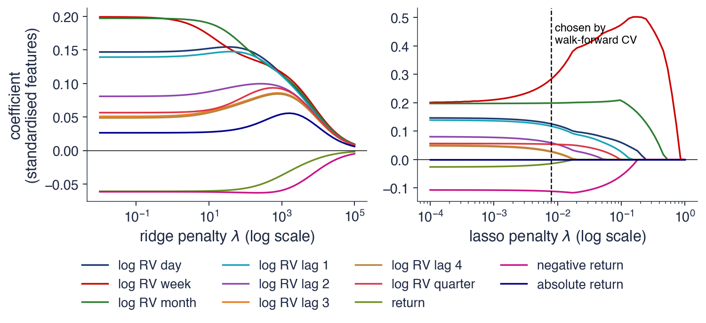
Ținta: logaritmul mediei variabilei proxy a varianței din următoarele 5 zile, S&P 500, 2008–2012 (1 193 de zile); 11 variabile standardizate (secțiunea 7)
Lasso cu \(\lambda = 0{,}0079\) (CV walk-forward): rămîn 10 din 11 variabile; coeficientul săptămînal crește de la \(+0{,}199\) (OLS) la \(+0{,}283\), iar randamentul absolut iese din model
Pe graficul din stînga, ridge contractă toți coeficienții lin și împreună, iar variabilele corelate își împart ponderea. Randamentul negativ își păstrează semnul negativ pînă la capăt: scăderile pieței cresc volatilitatea viitoare, ceea ce corespunde efectului de levier din Capitolul 9.
Pe graficul din dreapta, lasso introduce variabilele pe rînd, pe măsură ce \(\lambda\) scade. Varianța săptămînală intră prima, deoarece este cea mai informativă variabilă luată singură. La valoarea aleasă a lui \(\lambda\), lasso păstrează structura HAR, cu componentele zilnică, săptămînală și lunară, plus randamentul negativ, cu coeficientul −0,112.
Lasso selectează variabile, dar nu le testează. Un coeficient egal cu zero nu este echivalentul unui p-value mare: el arată doar că, la acest \(\lambda\), variabila nu îmbunătățește prognoza suficient pentru a-și plăti penalizarea. Între variabile puternic corelate, alegerea lasso poate fi instabilă de la un eșantion la altul.
Pe scurt
Ridge (stînga): toți coeficienții se contractă lin și împreună; variabilele corelate își împart ponderea
randamentul negativ își păstrează semnul negativ pînă la capăt: piețele în scădere cresc volatilitatea viitoare (efectul de levier, Capitolul 9)
Lasso (dreapta): variabilele intră pe rînd pe măsură ce \(\lambda\) scade
varianța săptămînală intră prima: cea mai informativă variabilă luată singură
la \(\lambda\) ales, lasso păstrează structura HAR (zi, săptămînă, lună) plus randamentul negativ, \(-0{,}112\)
Lasso selectează, nu testează: un coeficient zero nu este un p-value
Sinteza secțiunii
Ridge, (13.2), și lasso stabilizează regresia prin penalizarea coeficienților: ridge contractă toți coeficienții fără a anula vreunul, lasso anulează exact o parte dintre ei. Pe variabilele de volatilitate ale S&P 500, lasso regăsește structura HAR plus efectul de levier. Ambele rămîn modele liniare; secțiunea următoare trece la arbori, care surprind neliniarități și interacțiuni.
Arbori de decizie, random forest și gradient boosting
Secțiunea construiește arborii de regresie, de la regula de împărțire pînă la un exemplu calculat de mînă și un arbore estimat pe volatilitatea S&P 500. Arată apoi cele două moduri de a combina arbori, media din random forest și secvența din gradient boosting, și le compară pe datele de volatilitate.
Un arbore de regresie (regression tree) împarte spațiul variabilelor explicative în dreptunghiuri și prezice, în fiecare dreptunghi, media lui \(y\) din acel dreptunghi. Dreptunghiurile finale se numesc frunze (leaves). Fiecare împărțire folosește o variabilă \(j\) și un prag \(s\): observațiile cu \(x_j \le s\) merg la stînga, cele cu \(x_j > s\) la dreapta.
Arborele se estimează lacom (greedy): în fiecare nod se alege perechea \((j, s)\) care minimizează suma pătratelor erorilor (SSE, sum of squared errors),
unde \(\bar y_L\) și \(\bar y_R\) sînt mediile lui \(y\) în cele două grupuri, adică cele două prognoze. Procedura se repetă în fiecare jumătate pînă la o regulă de oprire, de exemplu o adîncime maximă sau un număr minim de observații într-o frunză.
Arborii surprind efecte neliniare și interacțiuni fără ca acestea să fie specificate dinainte și sînt insensibili la transformările monotone ale variabilelor, deoarece depind doar de ordinea valorilor. Punctul lor slab este varianța mare: o mică schimbare a datelor poate schimba prima împărțire și, prin ea, întregul arbore, ca în simularea din secțiunea 2.
Pe scurt
Un arbore de regresie împarte spațiul variabilelor în dreptunghiuri și prezice media lui \(y\) în fiecare frunză
regula de împărțire: o variabilă \(j\) și un prag \(s\): stînga \(x_j \le s\), dreapta \(x_j > s\)
Estimarea greedy: în fiecare nod alegem \((j, s)\) care minimizează \(\mathrm{SSE} = \sum_{\text{stînga}}(y - \bar y_L)^2 + \sum_{\text{dreapta}}(y - \bar y_R)^2\)
SSE: suma pătratelor erorilor; \(\bar y_L\), \(\bar y_R\): mediile lui \(y\) în grupul din stînga și în cel din dreapta (cele două prognoze)
repetăm în fiecare jumătate pînă la o regulă de oprire: adîncimea maximă, numărul minim de observații dintr-o frunză
Puncte tari și puncte slabe
efecte neliniare și interacțiuni fără a le specifica; insensibil la transformările monotone ale lui \(x\)
varianță mare: o mică schimbare a datelor poate schimba tot arborele (secțiunea 2)
Exemplul folosește șase săptămîni. Variabila \(x\) este volatilitatea din această săptămînă, în procente, cu valorile 0,6; 0,8; 1,0; 1,5; 2,0; 2,4, iar ținta \(y\) este volatilitatea din săptămîna următoare, cu valorile 0,7; 0,9; 0,8; 1,6; 2,1; 2,2. Fără nicio împărțire, prognoza este media \(\bar y = 1{,}38\), iar SSE este 2,268.
Pragurile candidate sînt mijloacele intervalelor dintre valorile consecutive ale lui \(x\): 0,70; 0,90; 1,25; 1,75; 2,20. Pentru fiecare prag se calculează cele două medii și SSE. Pragul 0,70 lasă o singură observație la stînga și dă SSE 1,708; pragul 1,25 separă primele trei săptămîni de ultimele trei, cu frunzele 0,80 și 1,97 și SSE 0,227, cea mai mică valoare din tabel.
Cea mai bună împărțire este deci \(s = 1{,}25\). Ea explică \(1 - 0{,}227/2{,}268 = 0{,}90\) din variația țintei: o singură întrebare, „este volatilitatea de acum peste 1,25%?”, separă săptămînile calme de cele agitate. Un arbore mai adînc ar repeta aceeași căutare în fiecare dintre cele două grupuri.
Pe scurt
\(s\)
\(\bar y_L\)
\(\bar y_R\)
SSE
\(0{,}70\)
\(0{,}70\)
\(1{,}52\)
\(1{,}708\)
\(0{,}90\)
\(0{,}80\)
\(1{,}68\)
\(1{,}248\)
\(1{,}25\)
\(0{,}80\)
\(1{,}97\)
\(0{,}227\)
\(1{,}75\)
\(1{,}00\)
\(2{,}15\)
\(0{,}505\)
\(2{,}20\)
\(1{,}22\)
\(2{,}20\)
\(1{,}468\)
Șase săptămîni: \(x\) = volatilitatea din această săptămînă (%), \(y\) = cea din săptămîna următoare
Arborele din grafic este estimat pe S&P 500 în perioada 2008–2012, cu ținta și variabilele exprimate în logaritmul varianței (în %² pe zi). În fiecare nod, value este media țintei pentru observațiile din acel nod, deci prognoza arborelui dacă s-ar opri acolo.
Prima împărțire este „log RV săptămînal ≤ 0,44”, unde RV (realised variance) este varianța realizată. Pragul corespunde unei volatilități anuale de aproximativ 19,8%: arborele separă întîi regimul calm de cel agitat. Toate împărțirile folosesc varianța săptămînală, aceeași variabilă pe care lasso a ales-o prima în secțiunea 4.
Arborele de adîncime 2 are patru frunze, deci patru niveluri posibile ale prognozei. Este ușor de citit, dar prognoza lui este o funcție în trepte a volatilității curente; random forest și boosting, pe slide-urile următoare, netezesc aceste trepte prin combinarea multor arbori.
Pe scurt
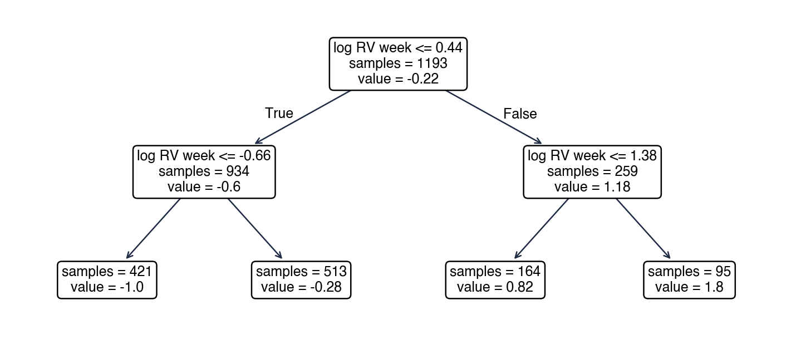
S&P 500, 2008–2012, ținta și variabilele în logaritmul varianței (%\(^2\) pe zi); value: media țintei în nod
Interpretare: prima împărțire, log RV săptămînal \(\le 0{,}44\), corespunde unei volatilități anuale de circa 19,8%; toate împărțirile folosesc varianța săptămînală, variabila aleasă prima de lasso
Random forest (Breiman, 2001b) face media a \(B\) arbori adînci, fiecare crescut pe un eșantion bootstrap din datele de antrenare, metodă numită bagging (bootstrap aggregating); bootstrap-ul a fost introdus în Capitolul 2. În plus, la fiecare împărțire se încearcă doar o submulțime aleatoare de variabile. Această a doua sursă de aleatorism face arborii mai puțin corelați între ei.
Efectul mediei se vede într-un calcul simplu. Dacă fiecare dintre cei \(B\) arbori are varianța \(\sigma^2\) și corelația dintre oricare doi este \(\rho\), atunci
Al doilea termen scade cu \(B\), primul nu. Cu \(\rho = 0{,}3\) și \(\sigma^2 = 1\), varianța este 1,000 pentru un arbore, 0,370 pentru 10 arbori și 0,302 pentru 300 de arbori, aproape de pragul \(\rho\sigma^2 = 0{,}3\).
Din (13.3) rezultă două concluzii practice. Mai mulți arbori nu produc overfitting, ci doar apropie varianța de prag. Pragul însuși coboară dacă arborii sînt mai puțin corelați, de exemplu încercînd mai puține variabile la fiecare împărțire. Capitolul folosește 300 de arbori, cel puțin 20 de observații într-o frunză și jumătate din variabile încercate la fiecare împărțire.
Pe scurt
Breiman (2001b): media a \(B\) arbori adînci, fiecare crescut pe un eșantion bootstrap (Capitolul 2) din datele de antrenare (bagging)
la fiecare împărțire se încearcă doar o submulțime aleatoare de variabile: arborii devin mai puțin corelați
Efectul mediei: \(B\) arbori, fiecare cu varianța \(\sigma^2\) și corelația \(\rho\) între oricare doi
\(\mathrm{Var}(\text{media}) = \rho\sigma^2 + (1 - \rho)\sigma^2/B\): partea \(\rho\sigma^2\), comună tuturor arborilor, nu scade cu \(B\)
Gradient boosting (Friedman, 2001) construiește modelul pas cu pas, fiecare arbore mic nou învățînd ce au ratat arborii anteriori. Se pornește de la prognoza constantă \(F_0 = \bar y\). La pasul \(m\) se estimează un arbore mic \(h_m\) pe reziduurile \(y_t - F_{m-1}(x_t)\), iar modelul se actualizează:
unde \(\nu\) este rata de învățare (learning rate). Pentru pierderea pătratică, reziduurile sînt egale cu minus gradientul pierderii în raport cu prognoza; de aici numele metodei, care este o coborîre pe gradient în spațiul funcțiilor.
Cele două metode de ansamblu atacă termeni diferiți din (13.1). Random forest folosește arbori adînci, cu deplasare mică, în paralel, iar media le reduce varianța. Boosting folosește arbori mici, cu deplasare mare, în secvență, iar fiecare pas reduce deplasarea. De aceea, la boosting prea mulți pași produc overfitting, în timp ce la random forest nu.
Metoda funcționează cu orice pierdere derivabilă, înlocuind reziduurile cu minus gradientul pierderii respective. Cu pierderea cuantilică se obține quantile gradient boosting, folosit pentru VaR în secțiunea 9.
Pe scurt
Friedman (2001): construim modelul pas cu pas, fiecare arbore mic nou învățînd ce au ratat cei anteriori
pornim de la \(F_0 = \bar y\); la pasul \(m\) estimăm un arbore mic \(h_m\) pe reziduurile \(y_t - F_{m-1}(x_t)\)
actualizăm \(F_m = F_{m-1} + \nu\, h_m\), cu rata de învățare\(0 < \nu \le 1\)
pentru pierderea pătratică, reziduurile sînt minus gradientul pierderii: de aici numele
Random forest comparat cu boosting
random forest: arbori adînci în paralel; media reduce varianța
boosting: arbori mici în secvență; fiecare pas reduce deplasarea; prea mulți pași produc overfitting
Funcționează orice pierdere derivabilă: pierderea cuantilică dă quantile boosting (secțiunea 9)
Un arbore, un random forest și boosting pe date de volatilitate
Comparația folosește S&P 500, cu antrenare în 2008–2018 (2 698 de zile) și validare în 2019–2022 (1 008 zile). Graficul arată MSE de validare în funcție de adîncime, pentru arborele singur și pentru random forest, și în funcție de numărul de arbori, pentru boosting. Liniile întrerupte din dreapta sînt MSE de antrenare, iar linia punctată este regresia HAR, cu MSE de validare 0,487.
Arborele singur atinge minimul 0,518 la adîncimea 5, peste HAR, iar la adîncimea 14 eroarea lui urcă la 0,819. Random forest atinge 0,458 la adîncimea 8 și rămîne la 0,465 la adîncimea 14, sub HAR la orice adîncime din grafic.
Diferența dintre cele două curbe este efectul mediei din (13.3). Un arbore adînc are varianță mare și intră repede în overfitting; media a 300 de arbori adînci păstrează deplasarea lor mică și elimină cea mai mare parte din varianță.
Pe scurt
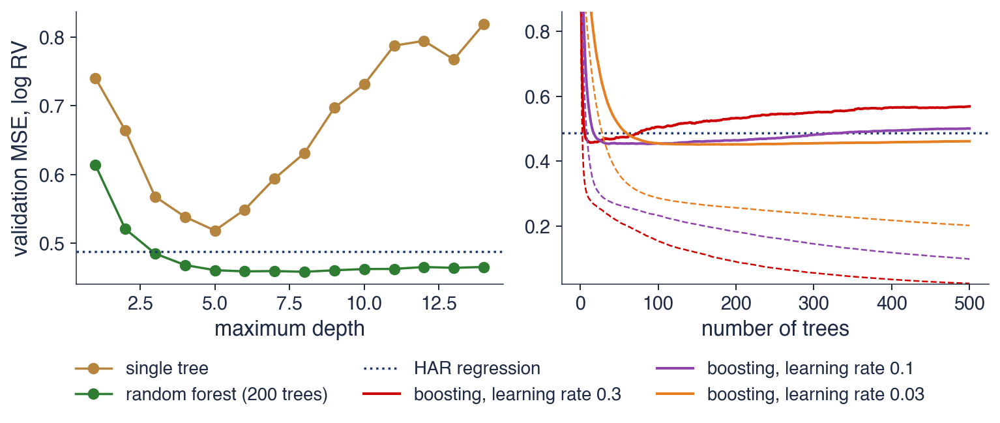
S&P 500, antrenare 2008–2018 (2 698 de zile), validare 2019–2022 (1 008 zile); linii întrerupte în dreapta: MSE de antrenare; punctat: regresia HAR (\(0{,}487\))
Un singur arbore: minimul \(0{,}518\) la adîncimea 5, \(0{,}819\) la adîncimea 14; random forest: \(0{,}458\) (adîncimea 8) și tot \(0{,}465\) la adîncimea 14
Arborele singur intră repede în overfitting, în timp ce random forest este aproape insensibil la adîncime: media elimină cea mai mare parte din varianța arborilor adînci. În această perioadă de validare, random forest depășește și regresia HAR.
La boosting, eroarea de validare atinge un minim și apoi crește, în timp ce eroarea de antrenare continuă să scadă. Cu rata de învățare 0,3, minimul este 0,457 după 13 arbori, iar după 500 de arbori eroarea urcă la 0,568. Cu rata de învățare 0,03, minimul este 0,451 după 154 de arbori, iar după 500 de arbori eroarea este 0,461. Pașii mici fac eroarea mai puțin sensibilă la numărul exact de arbori.
Oprirea timpurie (early stopping), adică alegerea numărului de arbori pe datele de validare, este deci parte din estimarea boosting. Numărul de arbori din boosting este un hiperparametru; numărul de arbori dintr-un random forest nu este, pentru că mai mulți arbori doar reduc varianța.
Pe scurt
Arborele singur intră repede în overfitting; random forest este aproape insensibil la adîncime
media elimină cea mai mare parte din varianța arborilor adînci; random forest depășește HAR în această perioadă de validare
Boosting: eroarea de validare atinge un minim, apoi crește, în timp ce eroarea de antrenare continuă să scadă
rata de învățare 0,3: minimul \(0{,}457\) după 13 arbori, \(0{,}568\) după 500 de arbori
rata de învățare 0,03: minimul \(0{,}451\) după 154 de arbori, \(0{,}461\) după 500 de arbori: pașii mici sînt mai siguri
Numărul de arbori din boosting este un hiperparametru; numărul de arbori dintr-un random forest nu este
Sinteza secțiunii
Un arbore de regresie împarte datele prin praguri alese lacom și are varianță mare. Random forest reduce varianța prin media arborilor adînci și decorelați, (13.3); gradient boosting reduce deplasarea prin adăugarea secvențială de arbori mici și cere oprire timpurie. Pe volatilitatea S&P 500, random forest și boosting au o eroare de validare sub cea a regresiei HAR, iar arborele singur nu. Secțiunea următoare tratează a treia familie de modele flexibile, rețelele neuronale.
Rețele neuronale
Secțiunea trece de la perceptron la perceptronul multistrat, explică funcțiile de activare, numărul de parametri și antrenarea prin coborîre pe gradient. Aplică apoi rețelele în două Quantlet-uri ale manualului: modelul ARCH cu rețea neuronală pentru GBP/USD și prognoza nivelului cursului USD/JPY.
Unitatea de bază a unei rețele este neuronul: \(h = g(b + w^\top x)\). Neuronul calculează o sumă ponderată a intrărilor \(x\), cu ponderile \(w\) și constanta \(b\) (termenul liber al neuronului), și o trece printr-o funcție de activare (activation function) \(g\). Rezultatul \(h\) este ieșirea neuronului.
Funcția \(g\) este neliniară și fixată dinainte. Neliniaritatea este necesară: o compunere de funcții liniare este tot liniară, astfel încît o rețea de neuroni fără funcție de activare ar fi doar o regresie liniară, oricîte straturi ar avea.
Perceptronul din secțiunea 1 folosește o funcție treaptă, cu valorile 0 sau 1. Rețelele moderne folosesc funcții netede sau liniare pe porțiuni, care permit calculul gradientului: funcția logistică \(1/(1 + e^{-z})\), tangenta hiperbolică tanh și ReLU (rectified linear unit), \(\max(0, z)\).
Pe scurt
Un neuron: \(h = g(b + w^\top x)\), o sumă ponderată a intrărilor trecută printr-o funcție de activare\(g\)
\(x\): intrările; \(w\): ponderile lor; \(b\): o constantă (termenul liber al neuronului); \(h\): ieșirea neuronului
\(g\): o funcție neliniară fixată; fără ea, o rețea de neuroni ar fi doar o regresie liniară
Funcțiile de activare
perceptronul folosește o funcție treaptă (0 sau 1)
rețelele moderne folosesc funcții \(g\) netede sau liniare pe porțiuni: logistică \(1/(1 + e^{-z})\), tanh, ReLU \(\max(0, z)\)
Un perceptron multistrat (MLP, multilayer perceptron) cu un strat ascuns de \(K\) neuroni produce prognoza
\[\hat y = c + \sum_{k=1}^{K} v_k\, g(b_k + w_k^\top x),\]
(13.4)
unde \(w_k\) și \(b_k\) sînt ponderile și constanta neuronului ascuns \(k\),\(v_k\) este ponderea acestui neuron în ieșire, iar \(c\) este constanta ieșirii. Modelul (13.4) este o regresie liniară în \(K\) variabile neliniare \(g(b_k + w_k^\top x)\), dar aceste variabile nu sînt alese de analist: sînt învățate și ele din date.
Numărul de parametri crește repede. Pentru 11 intrări și 16 neuroni, stratul ascuns are \(11 \times 16 = 176\) de ponderi plus 16 constante, adică 192 de parametri, iar ieșirea are \(16 + 1 = 17\); în total, 209 parametri.
Teorema aproximării universale (universal approximation) a lui Hornik, Stinchcombe & White (1989) arată că, avînd suficienți neuroni, un singur strat ascuns aproximează orice funcție continuă pe o mulțime compactă. Teorema garantează flexibilitatea, dar nu spune nimic despre cîte date sînt necesare pentru a estima o asemenea rețea fără overfitting.
Pe scurt
MLP (multilayer perceptron, perceptron multistrat) cu un strat ascuns de \(K\) neuroni
\[ \hat y = c + \sum_{k=1}^{K} v_k\, g(b_k + w_k^\top x) \]
\(w_k\), \(b_k\): ponderile și constanta neuronului ascuns \(k\); \(v_k\): ponderea neuronului \(k\) în ieșire; \(c\): constanta ieșirii
interpretarea: un model liniar în \(K\) variabile neliniare \(g(b_k + w_k^\top x)\), învățate și ele din date
Numărul de parametri pentru 11 intrări și 16 neuroni
stratul ascuns: \(11 \times 16\) ponderi \(+ 16\) constante \(= 192\); ieșirea: \(16 + 1 = 17\); în total 209
Aproximarea universalăHornik, Stinchcombe & White (1989): cu suficienți neuroni, un singur strat ascuns aproximează orice funcție continuă pe o mulțime compactă
Graficul din stînga arată o rețea cu trei intrări HAR, cele trei componente zilnică, săptămînală și lunară ale varianței, cinci neuroni ascunși și o singură ieșire, prognoza. Fiecare linie a diagramei este o pondere estimată; fiecare neuron ascuns combină cele trei intrări într-o variabilă nouă.
Graficul din dreapta compară funcțiile de activare. Funcțiile logistică și tanh se saturează pentru \(|z|\) mare: devin aproape constante, astfel încît derivata lor este aproape zero și antrenarea încetinește. ReLU, \(\max(0, z)\), este liniară pentru \(z > 0\) și nu se saturează în această regiune, motiv pentru care rețelele cu ReLU se antrenează mai repede.
Alegerea funcției de activare contează mai puțin pentru o rețea mică decît pentru una adîncă. Pentru volatilitate, mai important este ca intrările să conțină deja informația relevantă, așa cum o conțin componentele HAR.
Pe scurt
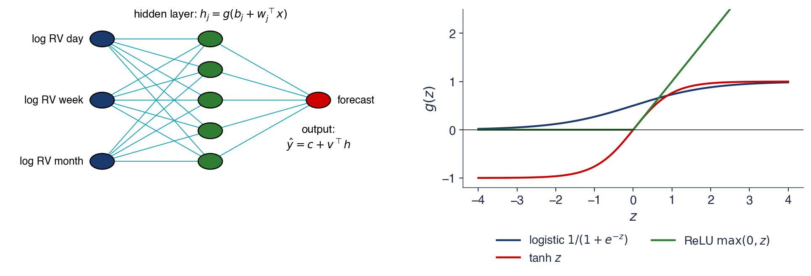
Stînga: trei intrări HAR, cinci neuroni ascunși, o prognoză; fiecare linie este o pondere
Dreapta: funcțiile logistică și tanh se saturează pentru \(|z|\) mare; ReLU \(= \max(0, z)\) este liniară pentru \(z > 0\) și se antrenează mai repede
Pierderea unei rețele se minimizează prin coborîre pe gradient (gradient descent): \(\theta \leftarrow \theta - \eta\,\nabla_\theta L\). Vectorul \(\theta\) conține toate ponderile și constantele, \(\nabla_\theta L\) este gradientul pierderii, iar \(\eta > 0\) este rata de învățare, mărimea pasului. Fiecare pas deplasează \(\theta\) în direcția în care pierderea scade cel mai repede.
Retropropagarea (Rumelhart, Hinton & Williams, 1986) calculează gradientul strat cu strat, aplicînd regula de derivare a funcțiilor compuse de la ieșire spre intrări. O epocă (epoch) este o trecere completă prin datele de antrenare. Adam este o variantă de coborîre pe gradient cu pași adaptivi.
Pierderea unei rețele nu este convexă, astfel încît ponderi inițiale diferite duc la rețele diferite. Capitolul fixează semințele aleatoare și face media a cinci rețele, un ansamblu (ensemble). Împotriva overfitting-ului, intrările și ținta se standardizează cu statisticile de antrenare, ponderile primesc o penalizare \(L_2\), ca la ridge, iar numărul de epoci este fixat. Cu date puține, rețeaua trebuie să fie mică: aici este suficient un strat ascuns cu 16 neuroni.
Pe scurt
Minimizăm pierderea prin coborîre pe gradient: \(\theta \leftarrow \theta - \eta\,\nabla_\theta L\)
\(\theta\): toate ponderile și constantele; \(\nabla_\theta L\): gradientul, vectorul derivatelor parțiale ale pierderii; \(\eta > 0\): rata de învățare (mărimea pasului)
fiecare pas deplasează \(\theta\) în direcția în care pierderea scade cel mai repede
retropropagarea calculează \(\nabla_\theta L\) strat cu strat, cu regula de derivare a funcțiilor compuse Rumelhart, Hinton & Williams (1986)
o epocă = o trecere prin datele de antrenare; Adam este o metodă de gradient cu pași adaptivi
Pierderea nu este convexă: ponderi inițiale diferite dau rețele diferite
fixăm semințele aleatoare și facem media a cinci rețele (un ansamblu)
Împotriva overfitting-ului
standardizăm intrările și ținta cu statisticile de antrenare; o penalizare \(L_2\) a ponderilor (ca la ridge); un număr fix de epoci
date puține, rețea mică: aici este suficient un strat ascuns cu 16 neuroni
În 1997, calculatorul Deep Blue al IBM (International Business Machines) l-a învins pe campionul mondial la șah. Succesul a venit mai ales din căutare și din reguli de evaluare scrise de oameni, nu din învățare din date: Deep Blue aparține mai degrabă inteligenței artificiale clasice decît machine learning-ului.
Învățarea profundă (deep learning), cu rețele de multe straturi antrenate pe volume uriașe de date, domină azi recunoașterea imaginilor și prelucrarea textului. Geoffrey Hinton, unul dintre autorii retropropagării, a primit pentru aceste contribuții Premiul Nobel pentru fizică în 2024.
Condițiile din finanțe sînt diferite. Datele de preț sînt puține în comparație cu milioanele de imagini dintr-un set de antrenare, iar raportul semnal–zgomot este mic. Pentru prognozele financiare, rețelele mici sînt de aceea regula, iar studiul de caz din secțiunea 11 arată că și acolo straturile suplimentare aduc puțin.
1997: Deep Blue l-a învins pe campionul mondial la șah mai ales prin căutare și reguli de evaluare scrise de oameni, nu prin învățare din date
Deep learning (multe straturi, volume uriașe de date) domină azi imaginile și textul; la prețurile financiare datele sînt puține și zgomotoase, deci rețelele mici sînt regula
unde \(r_t\) este randamentul zilei \(t\),\(x_{t-1}\) sînt intrările cunoscute la închiderea zilei \(t - 1\),\(f(x_{t-1})\) este media condiționată, \(s^2(x_{t-1})\) este varianța condiționată, iar \(\varepsilon_t\) este un șoc cu media 0 și varianța 1. Atît \(f\), cît și \(s^2\) se estimează prin rețele neuronale.
Modelul ARCH (autoregressive conditional heteroskedasticity) al lui Engle (1982) este un caz particular, cu \(s^2(x) = \omega + \sum_i \alpha_i r_{t-i}^2\),\(\omega > 0\) și \(\alpha_i \ge 0\): varianța este o funcție liniară de pătratele randamentelor trecute. Rețeaua renunță la această formă și lasă datele să determine cum depinde varianța de trecut.
Modelul NN-ARCH (neural-network ARCH) păstrează deci structura medie plus volatilitate din Capitolul 9 și face flexibilă doar forma funcțiilor. Întrebarea este dacă această flexibilitate aduce ceva față de ARCH și GARCH.
Pe scurt
Franke, Härdle & Hafner (2019), cap. 19: \(r_t = f(x_{t-1}) + s(x_{t-1})\,\varepsilon_t\), cu \(f\) și \(s^2\) estimate prin rețele neuronale
\(r_t\): randamentul zilei \(t\); \(x_{t-1}\): intrările cunoscute la închiderea zilei \(t - 1\)
\(f(x_{t-1})\): media condiționată; \(s^2(x_{t-1})\): varianța condiționată; \(\varepsilon_t\): un șoc cu media 0 și varianța 1
ARCH (Engle (1982)) este cazul particular \(s^2(x) = \omega + \sum_i \alpha_i r_{t-i}^2\)
\(\omega > 0\), \(\alpha_i \ge 0\): varianța este o funcție liniară de pătratele randamentelor trecute
Quantlet-ul SFEnnarch al manualului aplică modelul cursului GBP/USD. Intrările \(x\) sînt ultimele 3 randamente ale cursului, randamentul obligațiunilor germane pe 10 ani și randamentul aurului. Estimarea are doi pași: o rețea \(\hat f\) pentru medie, cu reziduurile \(e_t = r_t - \hat f(x_{t-1})\), apoi o rețea pentru \(e_t^2\), care dă varianța condiționată \(\hat s^2(x_{t-1})\).
Rețeaua folosită, ca în Quantlet, este o rețea RBF (radial basis function) cu 3 unități. Unitatea \(j\) calculează \(\exp(-\|x - c_j\|^2/s_j^2)\), unde \(c_j\) este centrul ei, obținut prin clustering, \(s_j\) este lățimea ei, iar \(\|x - c_j\|\) este distanța de la \(x\) la centru. Unitatea este aproape 1 cînd \(x\) este lîngă \(c_j\) și aproape 0 departe de el; ieșirea rețelei este o combinație liniară a celor 3 unități.
O problemă tehnică apare la pasul al doilea: nimic din construcția rețelei nu impune \(\hat s^2 > 0\). O rețea pentru varianță are nevoie de un prag minim impus din afară, în timp ce GARCH garantează pozitivitatea prin restricțiile asupra parametrilor săi.
Pe scurt
Quantlet-ul SFEnnarch: GBP/USD, intrările \(x\) = ultimele 3 randamente, randamentul obligațiunilor germane pe 10 ani, randamentul aurului
pasul 1: o rețea \(\hat f\) pentru medie; reziduurile \(e_t = r_t - \hat f(x_{t-1})\)
pasul 2: o rețea pentru \(e_t^2\) dă varianța condiționată \(\hat s^2(x_{t-1})\)
Rețea RBF (radial basis function, cu funcții de bază radiale) cu 3 unități, ca în Quantlet
unitatea \(j\): \(\exp(-\|x - c_j\|^2/s_j^2)\); \(c_j\): centrul ei (obținut prin clustering); \(s_j\): lățimea ei; \(\|x - c_j\|\): distanța de la \(x\) la \(c_j\)
unitatea este aproape de 1 cînd \(x\) este lîngă \(c_j\) și aproape de 0 departe de el; ieșirea: o combinație liniară a celor 3 unități
nimic nu impune \(\hat s^2 > 0\): o rețea pentru varianță are nevoie de un prag minim, pe care GARCH îl garantează prin restricțiile sale
Graficul folosește date zilnice începînd cu 7 ianuarie 2010, în total 4 048 de zile, și compară volatilitatea anualizată dată de rețeaua RBF cu cea a unui GARCH(1,1) estimat pe aceleași date, cu \(\hat\alpha = 0{,}077\) și \(\hat\beta = 0{,}892\).
În medie, cele două modele sînt de acord: volatilitatea medie este 8,9% pentru rețea și 8,8% pentru GARCH. Traiectoriile lor diferă însă: corelația dintre ele este doar 0,45, iar un MLP mic estimat în locul rețelei RBF dă o corelație asemănătoare, 0,43.
Corelația modestă arată că cele două modele nu spun același lucru despre momentul în care volatilitatea este mare. Slide-ul următor explică diferența printr-un episod concret.
Pe scurt
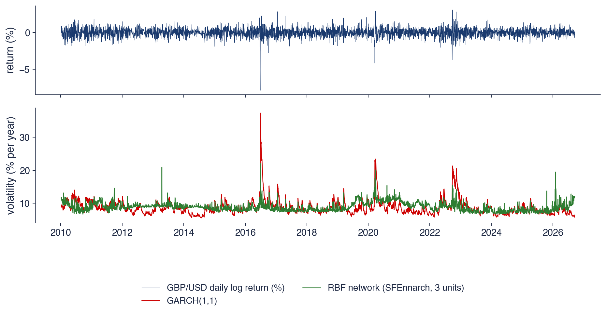
Date zilnice din 7 ianuarie 2010 (4 048 de zile); volatilitatea anualizată a rețelei RBF și a modelului GARCH(1,1) (\(\hat\alpha = 0{,}077\), \(\hat\beta = 0{,}892\))
Volatilitatea medie: rețeaua 8,9%, GARCH 8,8%; corelația celor două traiectorii \(0{,}45\) (un MLP mic: \(0{,}43\))
După votul pentru Brexit, volatilitatea GARCH atinge maximul de 37,3% pe 28 iunie 2016, iar cea a rețelei doar 22,0%. Rețeaua vede doar ultimele 3 randamente: un randament mare îi crește varianța timp de 3 zile, apoi efectul dispare. În modelul GARCH(1,1) din Capitolul 9,
termenul \(\beta\,\sigma_{t-1}^2\), cu \(\sigma_{t-1}^2\) varianța condiționată de ieri, transmite tot trecutul cu ponderi care descresc geometric. Volatility clustering are nevoie de memorie, nu doar de flexibilitate.
Rețeaua pentru medie explică 0,08% din variația randamentelor în eșantion: cursurile de schimb sînt aproape un mers aleator, iar partea utilă a modelului NN-ARCH este varianța, ca la GARCH.
Lecția depășește acest exemplu. Variabilele explicative bune, precum mediile HAR din secțiunea 7, care rezumă trecutul pe mai multe orizonturi, contează mai mult decît tipul de rețea. O rețea flexibilă cu intrări sărace nu poate reconstitui informația pe care nu o primește.
Pe scurt
După votul pentru Brexit, GARCH atinge maximul de 37,3% (28 iunie 2016); rețeaua doar 22,0%
rețeaua vede doar ultimele 3 randamente: un randament mare îi crește varianța timp de 3 zile, apoi efectul dispare
GARCH(1,1) (Capitolul 9): \(\sigma_t^2 = \omega + \alpha\,r_{t-1}^2 + \beta\,\sigma_{t-1}^2\), cu \(\sigma_{t-1}^2\) varianța condiționată de ieri
termenul \(\beta\,\sigma_{t-1}^2\) transmite tot trecutul: volatility clustering are nevoie de memorie, nu doar de flexibilitate
Rețeaua pentru medie explică \(0{,}08\%\) din randamente în eșantion: cursurile de schimb sînt aproape un mers aleator
partea utilă a modelului NN-ARCH este varianța, ca la GARCH
Lecția: variabilele bune (mediile HAR, secțiunea 7) contează mai mult decît tipul de rețea
Prognoza nivelului unui curs de schimb: SFEnnjpyusd
Quantlet-ul SFEnnjpyusd al manualului prognozează cursul yen–dolar din ultimele 3 valori, cu o rețea RBF cu 3 unități. Primele 80% din zile servesc pentru antrenare, ultimele 20% pentru test. Aplicarea din capitol folosește USD/JPY din 2000, cu separarea la 21 iunie 2021.
Prognoza nivelului are două capcane. Prima: o serie de niveluri pare previzibilă deoarece \(P_t \approx P_{t-1}\), iar orice model care urmează valoarea de ieri are o eroare mică în termeni absoluți. Reperul corect este de aceea mersul aleator \(\hat P_t = P_{t-1}\) din Capitolul 7. A doua: o rețea cu unități mărginite nu poate extrapola. Nivelurile de test urcă pînă la 163,9 yeni, în timp ce maximul din antrenare a fost 134,9.
Codul original rescalează prognozele de test folosind intervalul de valori al seriei de test, care nu este cunoscut în timp real: un caz de look-ahead bias. Versiunea din capitol folosește intervalul din antrenare, singurul disponibil la momentul prognozei.
Pe scurt
Quantlet-ul SFEnnjpyusd prognozează cursul yen–dolar din ultimele 3 valori, cu o rețea RBF cu 3 unități
primele 80% din zile pentru antrenare, ultimele 20% pentru test; aici USD/JPY din 2000, cu separarea la 21 iunie 2021
Două capcane ale prognozei nivelului
o serie de niveluri pare previzibilă deoarece \(P_t \approx P_{t-1}\): reperul corect este mersul aleator \(\hat P_t = P_{t-1}\) (Capitolul 7)
o rețea cu unități mărginite nu poate extrapola: nivelurile de test urcă pînă la 163,9, iar maximul din antrenare a fost 134,9
Codul original rescalează prognozele de test cu intervalul seriei de test, necunoscut în timp real; aici se folosește intervalul din antrenare
Comparația folosește RMSE (root mean squared error), rădăcina erorii pătratice medii, exprimată în yeni. Pe eșantionul de antrenare, rețeaua are RMSE 2,64, iar mersul aleator 0,66. Pe eșantionul de test, rețeaua are 27,56, iar mersul aleator 0,89.
În afara eșantionului, rețeaua este de 31 de ori mai slabă decît regula „mîine = azi”. Diferența uriașă vine din a doua capcană de pe slide-ul anterior: cînd cursul depășește intervalul din antrenare, unitățile RBF se apropie de zero și prognoza rămîne blocată sub nivelurile observate.
Problema nu dispare dacă rețeaua prognozează randamente în locul nivelurilor. Pe randamente, aceeași rețea are un \(R^2\) în afara eșantionului de −0,14%: nu există semnal de învățat, iar o prognoză zero este mai bună.
Interpretare: în afara eșantionului rețeaua este de 31 de ori mai slabă decît „mîine = azi”; pe randamente, aceeași rețea are un \(R^2\) în afara eșantionului de \(-0{,}14\%\)
Un MLP, (13.4), este o regresie liniară în variabile neliniare învățate din date și se antrenează prin coborîre pe gradient și retropropagare. Modelul NN-ARCH al manualului dă o volatilitate medie apropiată de GARCH, dar, fără memorie lungă, reacționează slab la șocuri precum votul pentru Brexit. Pe nivelul cursului USD/JPY, o rețea este de 31 de ori mai slabă decît mersul aleator. Secțiunea următoare aplică toate modelele într-o comparație riguroasă pentru volatilitate.
Aplicație: prognoza volatilității realizate
Prima aplicație compară modelele capitolului pe ținta cea mai favorabilă lor: volatilitatea săptămînii viitoare. Secțiunea definește ținta și variabilele explicative, reperul HAR și trei instrumente de evaluare, \(R^2\) în afara eșantionului, QLIKE și testul Diebold–Mariano, apoi prezintă rezultatele pentru S&P 500 și Bitcoin, prognozele din două episoade de criză și importanța variabilelor.
Aici \(o_t\) este randamentul logaritmic peste noapte, de la închiderea precedentă la deschidere, iar \(u_t\),\(d_t\),\(c_t\) sînt logaritmii maximului, minimului și închiderii față de deschidere. Ultimii doi termeni formează estimatorul Garman & Klass (1980), care folosește amplitudinea zilei pentru a reduce zgomotul față de randamentul la pătrat.
Ținta este \(y_t = \ln\big(\tfrac15\sum_{j=1}^{5} v_{t+j}\big)\), logaritmul varianței realizate din săptămîna următoare, adică din următoarele cinci zile de tranzacționare. Ea este cunoscută abia la închiderea zilei \(t + 5\), ceea ce face țintele zilelor vecine suprapuse și cere purging-ul din secțiunea 3. Logaritmul apropie distribuția țintei de distribuția Normală și garantează prognoze pozitive după aplicarea funcției exponențiale.
Pe scurt
Variabila proxy zilnică a varianței din Capitolul 8 (fără date intrazilnice): o estimație a varianței zilei \(t\) din prețurile de deschidere, maxim, minim și închidere
Variabilele explicative sînt calculate la închiderea zilei \(t\). Setul HAR conține trei variabile: \(\ln v_t\), logaritmul mediei lui \(v\) pe 5 zile (săptămîna) și logaritmul mediei pe 22 de zile (luna). Setul extins are 11 variabile: în plus, 4 laguri ale lui \(\ln v_t\), de la \(\ln v_{t-1}\) la \(\ln v_{t-4}\), media pe 66 de zile, randamentul \(r_t\), partea lui negativă \(\min(r_t, 0)\) și valoarea lui absolută \(|r_t|\).
Variabila \(\min(r_t, 0)\) este egală cu randamentul dacă acesta este negativ și cu 0 în rest. Ea permite scăderilor și creșterilor să aibă efecte diferite asupra volatilității viitoare, adică efectul de levier. Un model liniar cu \(r_t\) și \(\min(r_t, 0)\) are o pantă pentru zilele în creștere și alta pentru zilele în scădere.
Setul extins dă modelelor flexibile ocazia de a găsi informație în plus față de HAR: laguri individuale, un orizont mai lung și asimetrie. Dacă un model depășește HAR, aceste variabile și neliniaritățile dintre ele sînt sursele posibile ale cîștigului.
Pe scurt
Variabilele explicative la închiderea zilei \(t\)
HAR: \(\ln v_t\), logaritmul mediei pe 5 zile (săptămîna) și pe 22 de zile (luna)
extinse (11): în plus 4 laguri ale lui \(\ln v_t\) (\(\ln v_{t-1}, \dots, \ln v_{t-4}\)), media pe 66 de zile, \(r_t\), \(\min(r_t, 0)\), \(|r_t|\)
Notațiile
\(r_t\): randamentul logaritmic al zilei \(t\); \(|r_t|\): valoarea lui absolută
\(\min(r_t, 0)\): randamentul, dacă este negativ, și 0 în rest; permite scăderilor și creșterilor să aibă efecte diferite (efectul de levier)
unde \(v_t^{(w)}\) și \(v_t^{(m)}\) sînt mediile lui \(v\) pe ultimele 5 zile și pe ultimele 22 de zile, \(\beta_0\) este constanta, \(\beta_d\),\(\beta_w\),\(\beta_m\) sînt ponderile celor trei orizonturi, iar \(u_t\) este eroarea. Modelul se estimează prin OLS.
Cele trei componente corespund unor participanți la piață cu orizonturi diferite: zilnic, săptămînal și lunar. Cu ponderi pozitive pe toate trei, un șoc al volatilității rămîne în media lunară mult după ce a ieșit din cea zilnică, astfel încît se atenuează lent.
Această atenuare lentă imită memoria lungă a volatilității din Capitolul 11, fără parametrii fracționari ai unui model FIGARCH. Un model liniar cu patru coeficienți care reproduce acest fapt stilizat este un reper greu de depășit.
Pe scurt
Modelul HAR (heterogeneous autoregressive, autoregresiv heterogen) Corsi (2009)
Întrebarea secțiunii este dacă lasso, random forest, gradient boosting sau un MLP adaugă ceva peste HAR în afara eșantionului. Pe date intrazilnice, studiul amplu al lui Christensen, Siggaard & Veliyev (2023) găsește cîștiguri modeste, venite mai ales din variabilele suplimentare.
Evaluarea folosește schema walk-forward din secțiunea 3, cu reestimare anuală: pentru S&P 500 prognozele încep în 2013, pentru Bitcoin în 2018. Toate modelele primesc aceleași date și aceleași reguli de alegere a hiperparametrilor.
Modelele prognozează logaritmul varianței, \(\hat y_t\), dar evaluarea prin QLIKE cere o prognoză a varianței în niveluri. Transformarea este \(\hat h_t = \exp(\hat y_t + \hat s^2/2)\), unde \(\hat s^2\) este varianța reziduală din antrenare. Dacă eroarea din logaritm este aproximativ Normală, varianța are o distribuție log-Normală, iar media ei este \(\exp(\hat y_t + \hat s^2/2)\);\(\exp(\hat y_t)\) singur ar subestima varianța medie.
Pe scurt
Întrebarea acestei secțiuni
adaugă lasso, random forest, gradient boosting sau un MLP ceva peste HAR în afara eșantionului?
\(R^2\) în afara eșantionului (out-of-sample), propus de Campbell & Thompson (2008), compară eroarea pătratică a modelului cu cea a unei prognoze de referință \(\tilde y_t\):
unde \(\hat y_t\) este prognoza modelului, iar sumele se calculează doar pe zilele de test. Reperul \(\tilde y_t\) este, în capitol, fie media din antrenare, fie prognoza HAR.
Indicatorul este cel mult 1. O valoare pozitivă înseamnă o eroare pătratică mai mică decît a reperului, una negativă o eroare mai mare. Spre deosebire de \(R^2\) din eșantion, \(R^2_{OOS}\) poate fi negativ, iar valorile negative sînt frecvente cînd modelele flexibile se aplică unor ținte zgomotoase.
Pentru S&P 500, eroarea pătratică a MLP este 0,397, iar cea a HAR este 0,433. Raportul este 0,917, deci \(R^2_{OOS} = 1 - 0{,}917 = +8{,}3\%\): MLP reduce eroarea pătratică a prognozelor HAR cu 8,3%.
unde \(\mathrm{RV}_t\) este varianța realizată din următoarele 5 zile, ținta în niveluri, iar \(\hat h_t\) este prognoza ei. Patton (2011) arată că QLIKE este robustă la folosirea unei variabile proxy zgomotoase în locul varianței adevărate: ordonarea modelelor nu este distorsionată de zgomotul variabilei proxy.
Pentru un \(\mathrm{RV}_t\) dat, pierderea este minimă la \(\hat h_t = \mathrm{RV}_t\), iar un QLIKE mediu mai mic indică prognoze mai bune. Pierderea este însă asimetrică. Pentru \(\mathrm{RV} = 1\), prognoza \(\hat h = 0{,}5\) costă 1,307, iar prognoza \(\hat h = 2\) costă 1,193, deși ambele greșesc cu un factor de 2.
Subestimarea este deci penalizată mai mult decît supraestimarea. Asimetria corespunde costurilor din managementul riscului, unde o volatilitate subestimată duce la capital insuficient și la depășiri ale VaR, adică la eroarea mai costisitoare.
Pe scurt
QLIKE (Capitolul 8): o funcție de pierdere pentru prognozele varianței, robustă la o variabilă proxy zgomotoasă Patton (2011)
Testul Diebold & Mariano (1995) (DM) întreabă dacă două modele \(A\) și \(B\) au aceeași pierdere așteptată. Pornind de la diferența pierderilor din fiecare zi,
unde \(\bar d\) este media lui \(d_t\) și \(n\) este numărul zilelor de test. Sub ipoteza acurateții egale, statistica DM are aproximativ distribuția Normală standard.
Numitorul folosește varianța pe termen lung (long-run variance) \(\widehat{\mathrm{LRV}}\) a lui \(d_t\), estimată Newey–West cu 5 laguri. Corecția este necesară deoarece țintele suprapuse pe 5 zile fac diferențele de pierdere autocorelate; varianța simplă ar subestima incertitudinea lui \(\bar d\) și ar face testul prea permisiv.
Semnul statisticii arată direcția: DM negativ înseamnă că modelul \(A\) are pierderea mai mică, DM pozitiv că \(B\) este mai bun. Dacă \(|\mathrm{DM}| > 1{,}96\), diferența este semnificativă la pragul de 5%. În tabelul următor, \(A\) este fiecare model de machine learning, iar \(B\) este HAR.
Pe scurt
Testul Diebold–MarianoDiebold & Mariano (1995): au două modele \(A\) și \(B\) aceeași pierdere așteptată?
Tabelul rezumă prognozele pentru 3 444 de zile de S&P 500, începînd cu 2 ianuarie 2013, și pentru 3 178 de zile de Bitcoin, începînd cu 1 ianuarie 2018. \(R^2_{OOS}\) este exprimat în procente și calculat pe logaritmul varianței, față de media din antrenare și față de HAR; GB înseamnă gradient boosting.
Pentru S&P 500, HAR are deja \(R^2_{OOS}\) de 61,5% față de medie. Lasso și MLP îl depășesc semnificativ: \(R^2_{OOS}\) față de HAR este +7,1% pentru lasso și +8,3% pentru MLP, cu statisticile DM −5,12 și −3,96, ambele cu p-value sub 0,001, iar QLIKE scade de la 0,414 la 0,400 și 0,398. Random forest (+1,0%, p 0,747) și boosting (−2,7%, p 0,308) nu diferă semnificativ de HAR.
Pentru Bitcoin, HAR are \(R^2_{OOS}\) de 44,0% față de medie și niciun model nu îl depășește semnificativ: lasso cîștigă +2,0%, dar cu p-value 0,520. Boosting este semnificativ mai slab decît HAR, cu \(R^2_{OOS}\) −4,2% și DM +2,12 (p 0,034). Cîștigurile, acolo unde există, sînt de cîteva procente, iar ele vin de la modelele cele mai apropiate de HAR: lasso este un HAR extins și penalizat, iar MLP folosește aceleași intrări.
Pe scurt
Model
\(R^2_{OOS}\) față de medie
\(R^2_{OOS}\) față de HAR
QLIKE
DM față de HAR (p)
S&P 500
HAR
\(61{,}5\)
–
\(0{,}414\)
–
Lasso
\(64{,}2\)
\({+7{,}1}\)
\(0{,}400\)
\({-5{,}12}\) (\(<\) 0,001)
RF
\(61{,}9\)
\({+1{,}0}\)
\(0{,}416\)
\({+0{,}32}\) (0,747)
GB
\(60{,}4\)
\({-2{,}7}\)
\(0{,}421\)
\({+1{,}02}\) (0,308)
MLP
\(64{,}7\)
\({+8{,}3}\)
\(0{,}398\)
\({-3{,}96}\) (\(<\) 0,001)
Bitcoin
HAR
\(44{,}0\)
–
\(3{,}111\)
–
Lasso
\(45{,}1\)
\({+2{,}0}\)
\(3{,}108\)
\({-0{,}64}\) (0,520)
RF
\(43{,}4\)
\({-1{,}2}\)
\(3{,}119\)
\({+0{,}81}\) (0,418)
GB
\(41{,}7\)
\({-4{,}2}\)
\(3{,}148\)
\({+2{,}12}\) (0,034)
MLP
\(43{,}8\)
\({-0{,}3}\)
\(3{,}123\)
\({+1{,}10}\) (0,272)
Prognoze pentru 3 444 de zile (S&P 500, de la 2 ianuarie 2013) și 3 178 de zile (Bitcoin, de la 1 ianuarie 2018); \(R^2_{OOS}\) în %, pe log RV; GB: gradient boosting
S&P 500: lasso și MLP depășesc semnificativ HAR (\(+7{,}1\%\); \(+8{,}3\%\)); random forest și boosting nu
Bitcoin: niciun model nu depășește HAR; boosting este semnificativ mai slab (DM \(+2{,}12\))
Graficul arată, pentru S&P 500, volatilitatea realizată anualizată din următoarele 5 zile, \(\sqrt{252\,\mathrm{RV}_t}\), și prognozele HAR, random forest și MLP făcute la închiderea zilei \(t\), în două episoade de criză: martie 2020 și aprilie 2025.
Toate modelele reacționează abia după primul șoc. Nicio variabilă explicativă construită din volatilitatea trecută nu poate anunța un salt al volatilității înainte ca acesta să înceapă; modelele se ajustează rapid după prima zi agitată, dar nu o pot anticipa.
După șoc, modelele diferă prin modul în care extrapolează. Random forest este limitat de cele mai mari valori văzute în antrenare, pentru că prognoza lui este o medie a unor frunze care conțin observații istorice. MLP nu are această limită și poate depăși ținta în zilele cele mai agitate.
Pe scurt
S&P 500: volatilitatea realizată anualizată din următoarele 5 zile, \(\sqrt{252\,\mathrm{RV}_t}\), și prognozele HAR, random forest și MLP făcute la închiderea zilei \(t\)
Interpretare: toate modelele reacționează abia după primul șoc (martie 2020, aprilie 2025); random forest este limitat de cele mai mari valori văzute în antrenare, iar MLP poate depăși ținta
Importanța prin permutare (permutation importance) amestecă valorile unei variabile în datele de test și măsoară cu cît crește MSE de test. O creștere mare arată că modelul se bazează pe acea variabilă. Variabilele corelate își împart însă importanța: dacă una este amestecată, modelul poate folosi o alta similară, astfel încît fiecare pare mai puțin importantă decît grupul.
Valorile Shapley (Shapley values), din teoria jocurilor, descompun fiecare prognoză: \(\hat f(x) = \phi_0 + \sum_j \phi_j(x)\). Aici \(\phi_0\) este prognoza medie, iar \(\phi_j(x)\) este contribuția variabilei \(j\) la această prognoză: pozitivă dacă variabila ridică prognoza peste medie, negativă dacă o coboară. Contribuția \(\phi_j\) este media modificării lui \(\hat f\) cînd \(j\) se adaugă la fiecare submulțime a celorlalte variabile. SHAP (Shapley additive explanations), al lui Lundberg & Lee (2017), oferă versiuni rapide pentru arbori; pentru un model liniar, \(\phi_j = \beta_j(x_j - \bar x_j)\).
Ambele instrumente descriu modelul, nu economia. O variabilă importantă este una pe care modelul o folosește pentru prognoză, ceea ce nu înseamnă că ea cauzează volatilitatea viitoare.
Pe scurt
Importanța prin permutare: amestecăm o variabilă în datele de test și măsurăm cu cît crește MSE de test
creștere mare: modelul se bazează pe variabilă; variabilele corelate își împart (și își ascund) importanța
Valorile Shapley (teoria jocurilor): \(\hat f(x) = \phi_0 + \sum_j \phi_j(x)\), \(\phi_j\) este contribuția echitabilă a variabilei \(j\) la prognoză
\(\phi_0\): prognoza medie; \(\phi_j(x) > 0\): variabila \(j\) ridică această prognoză peste medie, \(\phi_j(x) < 0\): o coboară
\(\phi_j\) este media modificării lui \(\hat f\) cînd \(j\) se adaugă la fiecare submulțime a celorlalte variabile
SHAP (Shapley additive explanations) Lundberg & Lee (2017): versiuni rapide pentru arbori; pentru un model liniar \(\phi_j = \beta_j(x_j - \bar x_j)\)
Ambele descriu modelul, nu economia: importanța nu înseamnă cauzalitate
Graficul din stînga arată importanța prin permutare pentru un random forest pe cele 11 variabile, antrenat pînă în 2019 și testat în 2020–2026, pe 1 682 de zile. Amestecarea varianței săptămînale crește MSE de test cu 0,201, a celei lunare cu 0,053, iar a celei zilnice cu 0,034. Celelalte variabile contează mult mai puțin.
Graficul din dreapta folosește valorile Shapley exacte ale unui random forest pe cele 3 variabile HAR. Media lui \(|\phi|\) este 0,52 pentru componenta săptămînală, 0,13 pentru cea lunară și 0,13 pentru cea zilnică. Efectul componentei săptămînale este neliniar și crește cu nivelul volatilității.
Cele două metode și cele trei modele din capitol, lasso, arborele de adîncime 2 și random forest, ajung la aceeași concluzie: varianța săptămînală este variabila principală. Random forest adaugă o formă neliniară a acestei dependențe, dar nu o sursă nouă de informație.
Pe scurt
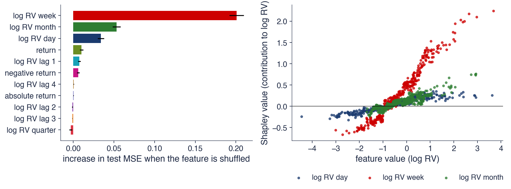
Stînga: random forest pe 11 variabile, antrenat pînă în 2019, testat în 2020–2026 (1 682 de zile): amestecarea varianței săptămînale crește MSE cu \(0{,}201\), a celei lunare cu \(0{,}053\), a celei zilnice cu \(0{,}034\)
Dreapta: valorile Shapley exacte ale unui random forest pe cele 3 variabile HAR; media \(|\phi|\): săptămîna \(0{,}52\), luna \(0{,}13\), ziua \(0{,}13\); efectul este neliniar și crește cu nivelul volatilității
HAR, (13.5), este un reper puternic pentru volatilitate. Evaluat prin \(R^2_{OOS}\),(13.6), QLIKE, (13.7), și testul Diebold–Mariano, (13.8), pe S&P 500 lasso și MLP îl depășesc semnificativ cu 7,1% și 8,3%, iar random forest și boosting nu; pe Bitcoin niciun model nu îl depășește. Toate modelele reacționează abia după primul șoc al unei crize, iar varianța săptămînală domină importanța variabilelor. Secțiunea următoare aplică aceleași metode unei ținte cu mult mai puțin semnal, semnul randamentului.
Aplicație: semnul randamentului de mîine
A doua aplicație este o problemă de clasificare: prognoza direcției randamentului de mîine. Secțiunea definește ținta și modelele, stabilește reperul corect, clasa majoritară, și un test față de acesta, apoi compară acuratețea modelelor pentru S&P 500, BET și Bitcoin.
Ținta este \(y_t = \mathbf{1}\{r_{t+1} > 0\}\), unde \(\mathbf{1}\{\cdot\}\) este funcția indicator, egală cu 1 dacă afirmația este adevărată și cu 0 în caz contrar; \(y_t = 1\) înseamnă că randamentul de mîine este pozitiv. Variabilele explicative, calculate la închiderea zilei \(t\), sînt ultimele 5 randamente, sumele randamentelor pe 5, 21 și 63 de zile și volatilitatea pe 21 și 63 de zile.
Modelele sînt regresia logit din Capitolul 12 și clasificatorii random forest și gradient boosting, estimați cu schema walk-forward și reestimare anuală. Datele sînt S&P 500 și BET (Bucharest Exchange Trading), indicele de referință al Bursei de Valori București (BVB), din 2008, și Bitcoin din 2018. Indicatorii, definiți în Capitolul 12, sînt acuratețea, ponderea zilelor cu semnul prognozat corect, și AUC (area under the ROC curve), aria de sub curba ROC (receiver operating characteristic), pentru care 0,5 înseamnă nicio capacitate de ordonare.
Așteptările sînt modeste din motive teoretice. Eficiența în formă slabă din Capitolul 7 spune că orice tipar sigur din randamentele trecute ar fi exploatat prin tranzacționare și ar dispărea. Un model care găsește totuși un asemenea tipar trebuie verificat cu atît mai atent.
Pe scurt
Ținta: \(y_t = \mathbf{1}\{r_{t+1} > 0\}\); variabilele la închiderea zilei \(t\): ultimele 5 randamente, sumele pe 5, 21 și 63 de zile, volatilitatea pe 21 și 63 de zile
\(\mathbf{1}\{\cdot\}\): indicatorul, egal cu 1 dacă afirmația este adevărată și cu 0 în caz contrar; \(y_t = 1\): randamentul de mîine este pozitiv
modele: logit (Capitolul 12), clasificatori random forest și gradient boosting; walk-forward, reestimare anuală
Reperul pentru clasificare este clasa majoritară (majority class): se prognozează mereu clasa mai frecventă din eșantionul de antrenare, aici „creștere”. Pentru S&P 500 din 2008, 54,4% din zile sînt în creștere, deci regula „mereu creștere” are dreptate în 54,4% din zile. O acuratețe de 53% pare o abilitate, fiind peste 50%, dar față de acest reper este o pierdere.
unde \(\widehat{\mathrm{acc}}\) este acuratețea modelului, \(\mathrm{acc}_0\) acuratețea reperului, iar \(n\) numărul zilelor de test. Dacă modelul nu are un avantaj real, \(z\) are aproximativ distribuția Normală standard. Pentru S&P 500, cu \(n = 4\,705\), eroarea standard este 0,73 puncte procentuale, deci banda de 95% în jurul reperului are o lățime de ±1,4 puncte.
Random forest are o acuratețe de 53,1%, cu \(z = -1{,}79\) (p 0,074), iar boosting 52,1%, cu \(z = -3{,}19\) (p 0,001): boosting este semnificativ mai slab decît regula „mereu creștere”. Pentru prognozele randamentelor înseși, reperul corespunzător este prognoza zero sau media istorică (Welch & Goyal, 2008).
Pe scurt
Reperul clasei majoritare: prognozăm mereu clasa mai frecventă din eșantionul de antrenare (aici: „creștere”)
S&P 500 din 2008: 54,4% din zile sînt în creștere, deci „mereu creștere” are dreptate în 54,4% din zile
o acuratețe de 53% pare o abilitate; față de acest reper este o pierdere
Testul față de reper: \(z = (\widehat{\mathrm{acc}} - \mathrm{acc}_0)/\sqrt{\mathrm{acc}_0(1 - \mathrm{acc}_0)/n}\)
\(\widehat{\mathrm{acc}}\): acuratețea modelului; \(\mathrm{acc}_0\): acuratețea reperului; \(n\): zilele de test; \(z \approx N(0,1)\) dacă modelul nu are un avantaj real
S&P 500, \(n = 4\,705\): eroarea standard 0,73 puncte; o bandă de 95% de \(\pm\)1,4 puncte în jurul reperului
Graficul arată, pentru fiecare piață și fiecare model, acuratețea minus acuratețea reperului, în puncte procentuale. Banda gri cuprinde ±1,96 erori standard în jurul lui zero: un model aflat în bandă nu diferă semnificativ de regula „mereu creștere”.
AUC confirmă imaginea. Pentru logit și random forest, AUC este 0,511 și 0,507 pe S&P 500, 0,533 și 0,533 pe BET, 0,515 și 0,519 pe Bitcoin. Toate valorile sînt foarte aproape de 0,5, adică modelele aproape nu ordonează zilele după probabilitatea de creștere.
Logit prognozează „creștere” în 86% din zilele S&P 500. Probabilitățile estimate de el sînt aproape constante, puțin peste 0,5, astfel încît logit se comportă aproape ca reperul. Aceasta explică de ce el pierde puțin față de reper, iar modelele flexibile pierd mai mult.
Pe scurt
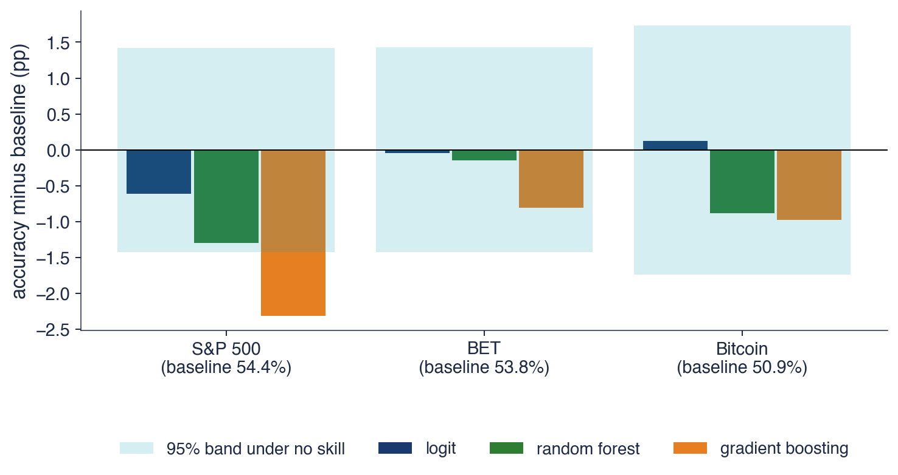
Acuratețea minus acuratețea reperului (puncte procentuale); banda: \(\pm 1{,}96\) erori standard în jurul lui zero
AUC pentru logit și pentru random forest: S&P 500 0,511 și 0,507, BET 0,533 și 0,533, Bitcoin 0,515 și 0,519; logit prognozează „creștere” în 86% din zilele S&P 500
Pe nicio piață, niciun model nu este semnificativ superior regulii „mereu creștere”, iar modelele flexibile sînt mai slabe decît logit. Pe S&P 500, diferențele față de reper sînt −0,6 puncte pentru logit, −1,3 pentru random forest și −2,3 pentru boosting; pe Bitcoin, +0,1 pentru logit și −0,9 pentru random forest.
Explicația este raportul semnal–zgomot foarte mic al randamentelor zilnice. În termenii descompunerii (13.1), aproape toată eroarea este zgomot. Modelele flexibile găsesc tipare în zgomotul anilor de antrenare, ca în secțiunea 2, și le aplică unor ani în care tiparele nu mai există; logit rămîne aproape de reper tocmai pentru că aproape nu se mișcă.
Chiar și un avantaj real de un punct procentual ar rămîne rareori profitabil: o strategie zilnică bazată pe semn tranzacționează foarte des, iar costurile de tranzacționare ar consuma cîștigul. Cîștigurile documentate ale machine learning-ului în prognoza randamentelor provin din secțiuni transversale mari, pe orizonturi lunare, nu dintr-un singur indice pentru ziua următoare, așa cum arată studiul de caz din secțiunea 11.
Pe scurt
Pe nicio piață, niciun model nu este semnificativ superior regulii „mereu creștere”; modelele flexibile sînt mai slabe decît logit
S&P 500: logit \(-0{,}6\), random forest \(-1{,}3\), boosting \(-2{,}3\) puncte; Bitcoin: logit \(+0{,}1\), random forest \(-0{,}9\)
Raportul semnal–zgomot al randamentelor zilnice este foarte mic
modelele flexibile găsesc tipare în zgomotul anilor de antrenare (secțiunea 2); logit este aproape de reper deoarece aproape nu se mișcă
Chiar și un avantaj real de un punct procentual ar rămîne rareori profitabil după costurile de tranzacționare: o strategie zilnică bazată pe semn tranzacționează foarte des
cîștigurile aduse de machine learning în prognoza randamentelor provin din secțiuni transversale mari, pe orizonturi lunare, nu dintr-un singur indice pentru ziua următoare (secțiunea 11)
Sinteza secțiunii
Prognoza semnului randamentului de mîine se judecă față de regula clasei majoritare, care pentru S&P 500 are dreptate în 54,4% din zile. Niciun model, pe nicio piață, nu este semnificativ superior acestei reguli; AUC rămîne aproape de 0,5, iar modelele flexibile sînt mai slabe decît logit. Secțiunea următoare revine la risc, cu prognoza unei cuantile.
Aplicație: VaR 1% prin metode cuantilice
A treia aplicație prognozează VaR 1% direct ca o cuantilă condiționată. Secțiunea introduce regresia cuantilică și pierderea cuantilică, varianta ei cu arbori în boosting și le compară prin backtesting cu simularea istorică și cu GARCH-t pe S&P 500 și Bitcoin.
Regresia cuantilică (quantile regression) a lui Koenker & Bassett (1978) estimează cuantila condiționată de ordin \(\alpha\),\(q_\alpha(x) = x^\top\beta_\alpha\). Cuantila \(q_\alpha(x)\) este nivelul sub care \(y\) se află cu probabilitatea \(\alpha\), condiționat de \(x\), iar coeficienții \(\beta_\alpha\) sînt specifici nivelului \(\alpha\): aceeași variabilă poate avea efecte diferite asupra cozii și asupra centrului distribuției.
Estimarea minimizează pierderea cuantilică. Pentru o eroare \(u = y - q\),
O observație aflată sub cuantilă (\(u < 0\)) costă \((1 - \alpha)|u|\), iar una aflată deasupra costă \(\alpha|u|\). Pentru \(\alpha = 0{,}5\) cele două costuri sînt egale și se obține regresia medianei.
Cu \(\alpha = 0{,}01\), observațiile de sub cuantilă sînt de 99 de ori mai scumpe decît cele de deasupra. Minimul pierderii medii se atinge atunci cînd aproximativ 1% din observații se află sub \(q\), adică exact proprietatea care definește cuantila de 1%.
\(q_\alpha(x)\): nivelul sub care \(y\) se află cu probabilitatea \(\alpha\), condiționat de \(x\); \(\beta_\alpha\): coeficienți specifici nivelului \(\alpha\)
Cu \(\alpha = 0{,}01\) și \(q = -\mathrm{VaR}\), pierderea (13.9) devine pierderea cuantilică medie din Capitolul 10: \((\alpha - I_t)(r_t + \mathrm{VaR}_t)\), unde \(I_t = 1\) dacă \(r_t < -\mathrm{VaR}_t\), adică dacă are loc o depășire, și 0 în rest. Aceeași funcție servește deci și la estimare, și la evaluarea prognozelor VaR.
VaR 1% pentru ziua \(t + 1\) este \(\widehat{\mathrm{VaR}}_t = -\hat q_{0{,}01}(x_t)\), cu variabilele explicative \(x_t\): volatilitatea zilnică, săptămînală și lunară, calculate ca rădăcini ale variabilei proxy, și randamentul \(r_t\). Nu se presupune nicio distribuție a randamentelor: datele aleg cum se transformă volatilitatea în coada de 1%. CAViaR (Engle & Manganelli, 2004) este o versiune dinamică a acestei idei, în care cuantila de ieri intră în ecuația cuantilei de azi.
Quantile gradient boosting (QGB) folosește aceeași pierdere, cu arbori adăugați în boosting ca în secțiunea 5. Este mai flexibil decît regresia liniară, dar la nivelul de 1% fiecare frunză vede puține observații din coadă, astfel încît varianța estimării este mare.
Pe scurt
Cu \(\alpha = 0{,}01\) și \(q = -\mathrm{VaR}\): pierderea cuantilică medie din Capitolul 10
\((\alpha - I_t)(r_t + \mathrm{VaR}_t)\), cu \(I_t = 1\) dacă \(r_t < -\mathrm{VaR}_t\) (o depășire) și 0 în rest
VaR 1% pentru ziua \(t + 1\): \(\widehat{\mathrm{VaR}}_t = -\hat q_{0{,}01}(x_t)\), cu \(x_t\) = volatilitatea zilnică, săptămînală și lunară (rădăcinile variabilei proxy) și \(r_t\)
nu presupunem nicio distribuție: datele aleg cum se transformă volatilitatea în coadă; CAViaR Engle & Manganelli (2004) este o versiune dinamică
Quantile gradient boosting: aceeași pierdere, cu arbori în boosting (secțiunea 5)
flexibil, dar la 1% fiecare frunză vede puține observații din coadă: varianță mare
Backtesting pentru VaR 1%: metode cuantilice, HS și GARCH-t (1/2)
Tabelul compară patru metode. QR este regresia cuantilică liniară, iar QGB este quantile gradient boosting. Reperele sînt simularea istorică (HS, historical simulation) pe 500 de zile și un GARCH-t, reestimat în fiecare ianuarie, ambele din Capitolul 10.
Coloana \(x\) dă numărul depășirilor, zilele cu \(r_{t+1} < -\widehat{\mathrm{VaR}}_t\), în cele \(n\) zile de test, iar rata este \(x/n\), cu ținta 1%. „p Kupiec” este p-value-ul testului lui Kupiec (1995) pentru rata depășirilor, iar „p ind.” este p-value-ul testului de independență al lui Christoffersen (1998). Pierderea cuantilică medie, înmulțită cu 100, măsoară calitatea prognozelor ca un tot (mai mică este mai bună), iar „VaR mediu” este media VaR 1%, în procente.
Pe S&P 500, QR are 28 de depășiri, o rată de 0,81% și cea mai mică pierdere, 3,38; GARCH-t are 52 de depășiri, o rată de 1,51% și p Kupiec 0,005. Pe Bitcoin, HS are 32 de depășiri, o rată de 1,01%, iar QGB are 47 de depășiri, cu rata 1,48%. VaR mediu variază între 2,42% (GARCH-t) și 2,97% (HS) pentru S&P 500 și între 8,52% (GARCH-t) și 10,46% (QR) pentru Bitcoin.
Pe scurt
Metoda
\(x\)
rata (%)
p Kupiec
p ind.
pierdere \(\times 100\)
VaR mediu
S&P 500
QR
28
\(0{,}81\)
0,252
0,020
\(3{,}38\)
\(2{,}70\)
QGB
42
\(1{,}22\)
0,213
0,015
\(3{,}51\)
\(2{,}46\)
HS
46
\(1{,}33\)
0,061
\(<\) 0,001
\(4{,}78\)
\(2{,}97\)
GARCH-t
52
\(1{,}51\)
0,005
0,008
\(3{,}50\)
\(2{,}42\)
Bitcoin
QR
23
\(0{,}72\)
0,098
0,563
\(13{,}03\)
\(10{,}46\)
QGB
47
\(1{,}48\)
0,012
0,235
\(13{,}19\)
\(8{,}86\)
HS
32
\(1{,}01\)
0,974
0,332
\(13{,}01\)
\(9{,}30\)
GARCH-t
41
\(1{,}29\)
0,117
0,558
\(13{,}15\)
\(8{,}52\)
Coloanele
\(x\): numărul depășirilor (\(r_{t+1} < -\widehat{\mathrm{VaR}}_t\)) în cele \(n\) zile de test; rata \(= x/n\), ținta 1%
p Kupiec: p-value-ul testului Kupiec al ratei; p ind.: p-value-ul testului de independență Christoffersen (Capitolul 10)
pierdere \(\times 100\): pierderea cuantilică medie (mai mică este mai bună); VaR mediu: media VaR 1%, în %
Pe S&P 500, cu 3 448 de zile de test începînd cu 2 ianuarie 2013, regresia cuantilică are o rată a depășirilor compatibilă cu 1% (0,81%) și cea mai mică pierdere cuantilică. Depășirile ei nu sînt complet independente: p-value-ul testului de independență este 0,020. GARCH-t este depășit prea des, în 1,51% din zile, iar testul Kupiec îl respinge.
Pe Bitcoin, cu 3 182 de zile de test, simularea istorică are cea mai bună rată, 1,01%. Quantile gradient boosting este respins de testul Kupiec, cu rata 1,48% și p-value 0,012: flexibilitatea lui nu compensează numărul mic de observații din coadă.
Citirea p-value-urilor urmează Capitolul 10. Un p Kupiec sub 0,05 arată că rata depășirilor diferă semnificativ de 1%. Un p ind. sub 0,05 arată că depășirile apar grupat, adică VaR reacționează prea lent la creșterile de volatilitate și lasă să treacă mai multe depășiri în zile consecutive.
Pe scurt
S&P 500 (3 448 de zile de la 2 ianuarie 2013): QR are rata corectă (0,81%) și cea mai mică pierdere
depășirile lui nu sînt complet independente (p ind. 0,020)
GARCH-t este depășit prea des (1,51%)
Bitcoin (3 182 de zile): HS are cea mai bună rată (1,01%)
QGB este respins de testul Kupiec (1,48%, p 0,012)
Interpretarea p-value-urilor
p Kupiec sub 0,05: rata depășirilor diferă semnificativ de 1%
p ind. sub 0,05: depășirile apar grupat, deci VaR reacționează prea lent
Graficul arată, pentru S&P 500, randamentele zilei următoare și minus VaR 1% pentru cele patru metode, în 2020 și 2025; punctele marchează depășirile VaR obținut prin regresie cuantilică.
QR și GARCH-t urmează volatilitatea: cînd volatilitatea crește, pragul lor coboară în cîteva zile. HS reacționează lent, pentru că fereastra de 500 de zile se schimbă doar prin intrarea zilelor noi, una cîte una, iar o zi extremă mută cuantila de 1% abia după ce mai multe asemenea zile au intrat în fereastră.
Diferența se vede în 2020: HS a fost depășit de 10 ori, iar QR de 4 ori, iar depășirile HS apar grupat, ceea ce explică p-value-ul testului de independență sub 0,001 din tabel. O metodă care urmează volatilitatea curentă evită tocmai aceste șiruri de depășiri.
Pe scurt
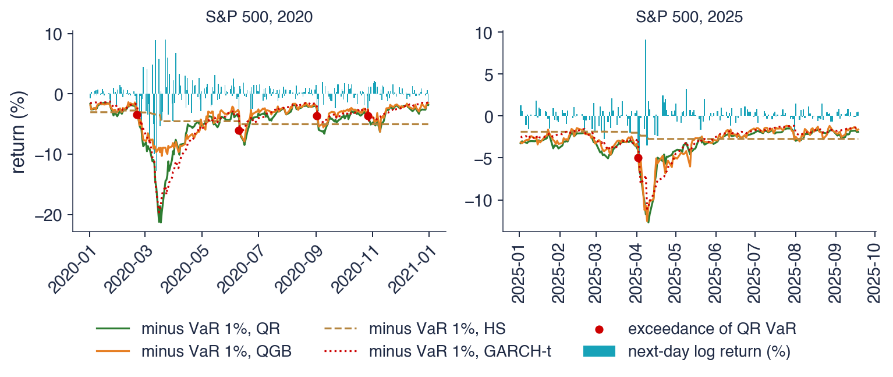
S&P 500: randamentele zilei următoare și minus VaR 1% pentru cele patru metode; punctele: depășirile VaR obținut prin regresie cuantilică
Interpretare: QR și GARCH-t urmează volatilitatea; HS reacționează lent; în 2020, HS a fost depășit de 10 ori, QR de 4 ori, iar depășirile HS apar grupat (p ind. \(<\) 0,001)
Regresia cuantilică estimează VaR 1% direct, prin pierderea cuantilică (13.9), fără ipoteze asupra distribuției. Pe S&P 500, varianta liniară are rata corectă a depășirilor și cea mai mică pierdere, iar GARCH-t este depășit prea des; pe Bitcoin, simularea istorică are cea mai bună rată, iar quantile boosting este respins, pentru că la 1% are prea puține observații din coadă. Secțiunea următoare tratează o problemă comună tuturor comparațiilor de modele: numărul încercărilor.
Data snooping și raportul Sharpe deflatat
Secțiunea cuantifică optimismul care apare cînd se raportează cea mai bună dintre multe strategii încercate pe aceleași date. Calculează maximul așteptat al rapoartelor Sharpe ale unor strategii fără abilitate, îl ilustrează cu 30 de reguli de medii mobile pe S&P 500 și introduce raportul Sharpe deflatat, care corectează pentru numărul încercărilor.
Data snooping înseamnă încercarea multor modele sau reguli pe aceleași date și raportarea celei mai bune (White, 2000). Cu suficiente încercări, o regulă fără nicio abilitate pare excelentă în eșantion, pentru că maximul multor estimări zgomotoase este sistematic peste valoarea lor adevărată. Harvey, Liu & Zhu (2016) arată că sute de predictori publicați ai randamentelor nu ar trece de o corecție pentru testarea multiplă.
Raportul Sharpe este randamentul mediu în exces împărțit la abaterea lui standard (Capitolul 1). Pentru o strategie fără abilitate, raportul Sharpe anual estimat pe \(Y\) ani de date are aproximativ distribuția \(N(0, 1/Y)\). Media zero exprimă lipsa abilității, iar varianța \(1/Y\) este eroarea de estimare, care scade cu lungimea eșantionului.
Pe 10 ani, abaterea standard a raportului Sharpe estimat este \(1/\sqrt{10} = 0{,}316\). O strategie fără abilitate are deci o șansă rezonabilă de a arăta un raport Sharpe de 0,3 sau mai mult doar din noroc, iar cînd se încearcă multe strategii, cea mai bună dintre ele va arăta mult mai bine.
Pe scurt
Data snooping: încercarea multor modele sau reguli pe aceleași date și raportarea celei mai bune White (2000)
cu suficiente încercări, o regulă fără nicio abilitate pare excelentă în eșantion
sute de predictori ai randamentelor publicați nu ar trece de o corecție pentru testare multiplă Harvey, Liu & Zhu (2016)
Raportul Sharpe anual al unei strategii fără abilitate pe \(Y\) ani este aproximativ \(N(0, 1/Y)\)
raportul Sharpe: randamentul mediu în exces împărțit la abaterea lui standard (Capitolul 1); \(Y\): numărul de ani de date
media 0: nicio abilitate; varianța \(1/Y\): eroarea de estimare, care scade odată cu lungimea eșantionului
unde \(\sigma\) este abaterea standard a rapoartelor Sharpe între încercări, \(1/\sqrt{Y}\) în cazul de mai sus, \(N\) este numărul încercărilor, \(\Phi^{-1}\) este funcția cuantilă a distribuției Normale standard, \(e \approx 2{,}718\), iar \(\gamma = 0{,}5772\) este constanta Euler–Mascheroni.
Termenul \(\Phi^{-1}(1 - 1/N)\) crește aproximativ ca \(\sqrt{2\ln N}\). Avantajul dat de noroc crește deci lent cu numărul încercărilor, dar fără limită: zece ori mai multe încercări adaugă mereu ceva la cel mai bun rezultat aparent.
Pentru 10 ani, cu \(\sigma = 0{,}316\) și \(N = 100\), formula dă \(0{,}316\,[(1 - \gamma)\,2{,}326 + \gamma\,2{,}680] = 0{,}80\). Un raport Sharpe anual de 0,80 apare deci, în medie, doar din noroc, dacă se aleg cele mai bune dintre 100 de strategii. Într-o simulare, cea mai bună dintre 10, 100 și 1 000 de strategii fără abilitate are un raport Sharpe mediu de 0,48, 0,79 și 1,02.
Graficul din stînga arată cel mai bun raport Sharpe anual dintre \(N\) strategii fără abilitate, pe 10 ani, în funcție de \(N\): curba urcă lent, ca în (13.10). Graficul din dreapta trece la date reale: 30 de reguli cu medii mobile (MA, moving average) pe S&P 500, fiecare investită în indice sau în numerar după semnalul ei, evaluate în 2000–2014 și apoi în 2015–2026.
Cea mai bună regulă în eșantion, MA 50/200, are un raport Sharpe de 0,66. În perioada următoare, aceeași regulă obține 0,54, locul 22 din 30, sub strategia buy and hold, care are 0,72.
Rapoartele Sharpe din eșantion și din afara lui au corelația 0,04: ordinea regulilor din prima perioadă nu spune practic nimic despre ordinea lor în a doua. Selecția celei mai bune reguli a ales, în mare parte, norocul primei perioade.
Pe scurt
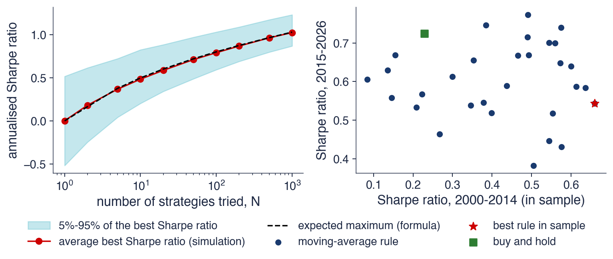
Stînga: cel mai bun raport Sharpe anual dintre \(N\) strategii fără abilitate (10 ani); dreapta: 30 de reguli cu medii mobile pe S&P 500 (investit sau numerar), 2000–2014 față de 2015–2026
Interpretare: cea mai bună regulă în eșantion (MA 50/200, Sharpe \(0{,}66\)) obține apoi \(0{,}54\), locul 22 din 30, sub buy and hold (\(0{,}72\)); rapoartele Sharpe din eșantion și din afara lui au corelația \(0{,}04\)
Raportul Sharpe deflatat (DSR, deflated Sharpe ratio) al lui Bailey & López de Prado (2014) este probabilitatea ca adevăratul raport Sharpe să depășească ceea ce ar arăta din noroc cea mai bună dintre \(N\) încercări:
Aici \(\widehat{SR}\) este raportul Sharpe zilnic al strategiei alese, \(T\) este numărul de zile, iar \(SR_0\) este maximul așteptat din (13.10), calculat cu \(\sigma\) egal cu abaterea standard a celor \(N\) rapoarte Sharpe încercate. \(\hat\gamma_3\) este asimetria (skewness), iar \(\hat\gamma_4\) boltirea (kurtosis) randamentelor zilnice, cu valoarea 3 pentru distribuția Normală; \(\Phi\) este funcția de repartiție Normală standard.
DSR este o probabilitate în intervalul \((0, 1)\). O valoare peste 0,95 indică un raport Sharpe semnificativ după corecția pentru cele \(N\) încercări. Numitorul măsoară precizia estimării lui \(\widehat{SR}\): asimetria negativă și cozile groase (heavy tails), frecvente la strategiile financiare, îl măresc și reduc DSR, pentru că un raport Sharpe estimat din asemenea randamente este mai puțin precis.
Pe scurt
Bailey & López de Prado (2014): probabilitatea ca adevăratul raport Sharpe să depășească ceea ce ar arăta din noroc cea mai bună dintre \(N\) încercări
\(\widehat{SR}\): raportul Sharpe zilnic al strategiei alese; \(T\): numărul de zile
\(SR_0\): maximul așteptat al celor \(N\) încercări fără abilitate (mai sus), cu \(\sigma\) = abaterea standard a celor \(N\) rapoarte Sharpe încercate
\(\hat\gamma_3\): asimetria, \(\hat\gamma_4\): boltirea randamentelor zilnice (3 pentru distribuția Normală); \(\Phi\): funcția de repartiție Normală standard
Interpretarea
DSR este o probabilitate în \((0, 1)\); peste 0,95: raportul Sharpe este semnificativ după corecția pentru \(N\) încercări
asimetria negativă și cozile groase măresc numitorul și reduc DSR
Calculul pas cu pas folosește cea mai bună regulă MA, cu \(N = 30\) de reguli încercate și \(T = 3\,769\) de zile. Raportul Sharpe zilnic este \(\widehat{SR} = 0{,}0416\), adică \(0{,}0416 \times \sqrt{252} = 0{,}66\) anual; asimetria randamentelor zilnice este \(\hat\gamma_3 = -0{,}44\), iar boltirea \(\hat\gamma_4 = 12{,}0\).
Pragul de noroc este \(SR_0 = 0{,}0105\,[(1 - \gamma)\,1{,}834 + \gamma\,2{,}249] = 0{,}0219\) pe zi, adică 0,35 anual. Argumentul lui \(\Phi\) din (13.11) este \(z = 1{,}20\), deci DSR \(= \Phi(1{,}20) = 0{,}88\). Fără corecția pentru \(N\), cu \(SR_0 = 0\), se obține raportul Sharpe probabilistic (PSR, probabilistic Sharpe ratio), egal cu 0,994.
Luată singură, regula pare semnificativă: PSR este mult peste 0,95. După corecția pentru cele 30 de încercări, DSR coboară la 0,88, sub pragul de 0,95, iar raportul Sharpe nu mai este semnificativ. Rezultatul din perioada 2015–2026, locul 22 din 30, confirmă această concluzie.
Pe scurt
Pas cu pas: cea mai bună regulă MA, \(N = 30\), \(T = 3\,769\) de zile
\(\widehat{SR} = 0{,}0416\) pe zi (\(\times\sqrt{252} = 0{,}66\)); \(\hat\gamma_3 = -0{,}44\), \(\hat\gamma_4 = 12{,}0\)
\(z\), argumentul lui \(\Phi\) din formula DSR: \(z = 1{,}20\), deci DSR \(= \Phi(z) = 0{,}88\)
fără corecția pentru \(N\) (PSR, probabilistic Sharpe ratio, cu \(SR_0 = 0\)): \(0{,}994\)
Interpretare: luată singură, regula pare semnificativă; după 30 de încercări nu mai este (DSR sub 0,95), așa cum confirmă și rezultatele ulterioare
Sinteza secțiunii
Cea mai bună dintre \(N\) strategii fără abilitate are un raport Sharpe pozitiv care crește cu \(N\),(13.10): pe 10 ani, aproximativ 0,80 pentru 100 de încercări. Pe S&P 500, cea mai bună dintre 30 de reguli de medii mobile ajunge pe locul 22 în perioada următoare, iar DSR, (13.11), arată că raportul ei Sharpe nu este semnificativ după corecție. Numărul de încercări trebuie de aceea raportat împreună cu rezultatul. Secțiunea următoare prezintă o lucrare în care machine learning trece aceste teste.
Studiu de caz: Gu, Kelly și Xiu (2020)
Secțiunea prezintă lucrarea de referință a domeniului, care compară metodele de machine learning pentru randamentele lunare ale acțiunilor americane. Descrie datele și schema de estimare, modul de evaluare, rezultatele statistice și economice și limitele lor.
Gu, Kelly & Xiu (2020) întreabă care metode prezic cel mai bine randamentul lunar al acțiunilor americane individuale. Datele cuprind aproape 30 000 de acțiuni în perioada 1957–2016. Variabilele explicative sînt 94 de caracteristici ale firmelor, în interacțiune cu 8 variabile macroeconomice, plus 74 de variabile indicatoare de industrie: în total, 920 de variabile.
Schema de estimare este de tip walk-forward: 18 ani de antrenare (1957–1974), 12 ani de validare (1975–1986) și 30 de ani de test (1987–2016). Modelele se reestimează o dată pe an; fereastra de antrenare crește, iar cea de validare avansează, astfel încît fiecare prognoză folosește doar date anterioare.
Lucrarea compară OLS, regresii penalizate și cu reducerea dimensiunii, random forest, arbori în boosting și rețele neuronale cu 1 pînă la 5 straturi ascunse, notate NN1–NN5, unde NN\(k\) are \(k\) straturi ascunse. Este deci aceeași familie de modele ca în acest capitol, aplicată unei probleme cu mult mai multe date.
Pe scurt
Gu, Kelly & Xiu (2020): care metode prezic cel mai bine randamentul lunar al acțiunilor americane individuale?
aproape 30 000 de acțiuni, 1957–2016; 94 de caracteristici ale firmelor, în interacțiune cu 8 variabile macroeconomice, plus 74 de variabile indicatoare de industrie: 920 de variabile
Schema de estimare: 18 ani de antrenare (1957–1974), 12 de validare (1975–1986), 30 de test (1987–2016)
reestimare o dată pe an; fereastra de antrenare crește, cea de validare avansează: o schemă walk-forward
modele: OLS, regresii penalizate și cu reducerea dimensiunii, random forest, arbori în boosting
rețelele NN1–NN5: NN\(k\) are \(k\) straturi ascunse
unde \(r_{i,t+1}\) este randamentul acțiunii \(i\) în luna \(t + 1\),\(\hat r_{i,t+1}\) este prognoza lui, iar sumele parcurg toate perechile acțiune–lună din perioada de test. Reperul este o prognoză zero, nu media istorică, ca în (13.6). Autorii arată că media istorică a unei acțiuni individuale este atît de zgomotoasă încît este ușor de depășit, deci reperul zero este mai exigent.
Modelele se compară cu teste Diebold–Mariano între toate perechile, adaptate unui panel de acțiuni: același instrument ca în secțiunea 7. Pentru cele 12 comparații se aplică o corecție Bonferroni, în care pragul de semnificație se împarte la numărul comparațiilor, o formă simplă de protecție împotriva data snooping-ului din secțiunea 10.
Valoarea economică se măsoară printr-un portofoliu. În fiecare lună, acțiunile se sortează în decile după prognoză; se cumpără decila de sus și se vinde decila de jos. Portofoliile sînt ponderate cu valoarea de piață, iar pentru fiecare se raportează raportul Sharpe, drawdown-ul și rulajul (turnover), adică ponderea portofoliului tranzacționată lunar.
Pe scurt
\(R^2_{OOS} = 1 - \sum_{(i,t)}(r_{i,t+1} - \hat r_{i,t+1})^2 / \sum_{(i,t)} r_{i,t+1}^2\): reperul este o prognoză zero, nu media istorică
\(r_{i,t+1}\): randamentul acțiunii \(i\) în luna \(t + 1\); \(\hat r_{i,t+1}\): prognoza lui; sumele parcurg toate perechile acțiune–lună din perioada de test
autorii arată că media istorică a unei acțiuni este atît de zgomotoasă încît este ușor de depășit: reperul zero este mai exigent
Teste Diebold–Mariano între toate perechile de modele, cu o corecție Bonferroni pentru cele 12 comparații (pragul de semnificație se împarte la numărul comparațiilor)
același instrument ca în secțiunea 7, aplicat unui panel de acțiuni
Valoarea economică: în fiecare lună, sortăm acțiunile în decile după prognoză; cumpărăm decila de sus și vindem decila de jos
portofolii ponderate cu valoarea de piață; raportul Sharpe, drawdown și rulajul (ponderea portofoliului tranzacționată lunar)
Graficul din stînga reproduce \(R^2_{OOS}\) lunar din tabelul 1 al lucrării. OLS cu toate cele 920 de variabile are −3,46%: estimatorul nepenalizat cu atîtea variabile învață zgomot. OLS-3, cu trei predictori clasici, mărimea, raportul valoare contabilă/valoare de piață (book-to-market) și momentum, are 0,16%. Random forest ajunge la 0,33%, iar rețeaua NN3 la 0,40%, respectiv 0,70% pentru cele mai mari 1 000 de acțiuni.
Graficul din dreapta trece la valoarea economică, din tabelul 7 al lucrării: raportul Sharpe anual al portofoliului diferenței dintre decile, ponderat cu valoarea de piață. Acesta este 0,61 pentru OLS-3, 0,98 pentru random forest și 1,35 pentru NN4.
Contrastul dintre cele două grafice este principala lecție a lucrării. Un \(R^2\) lunar sub 1% pare neglijabil, dar aplicat unei secțiuni transversale de mii de acțiuni, în fiecare lună, el ordonează acțiunile suficient de bine pentru a dubla raportul Sharpe al unei strategii long–short față de modelul liniar cu trei predictori.
Pe scurt
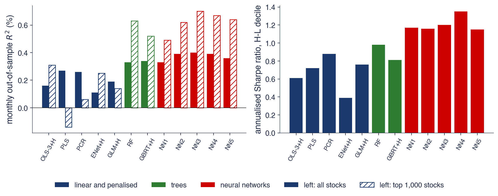
Stînga: \(R^2_{OOS}\) lunar (tabelul 1): OLS cu toate cele 920 de variabile \(-3{,}46\%\); OLS-3 (mărime, valoare, momentum) \(0{,}16\%\); random forest \(0{,}33\%\); NN3 \(0{,}40\%\) (\(0{,}70\%\) pentru cele mai mari 1 000 de acțiuni)
Dreapta: raportul Sharpe anual al diferenței dintre decile, ponderată cu valoarea de piață (tabelul 7): OLS-3 \(0{,}61\), random forest \(0{,}98\), NN4 \(1{,}35\)
Lucrarea găsește că modelele neliniare, arborii și rețelele, sînt superioare celor liniare, deoarece surprind interacțiunile dintre caracteristicile firmelor. Toate metodele sînt de acord asupra semnalelor principale: tendințele prețului, adică momentum și inversarea pe termen scurt, lichiditatea și volatilitatea. Rețelele puțin adînci sînt suficiente: 3–4 straturi dau rezultate mai bune decît 5, iar deep learning nu ajută la randamentele lunare.
Un \(R^2_{OOS}\) sub 1% pe lună este, în acest context, un rezultat important. Comparația cu secțiunea 8 este instructivă: acolo, niciun model nu depășea regula „mereu creștere” pentru semnul unui singur indice pe ziua următoare.
Rezultatele au și limite. Portofoliile construite pe baza rețelelor își schimbă lunar peste 100% din valoare, iar costurile de tranzacționare reduc cîștigurile. Dovezile provin dintr-o secțiune transversală de mii de acțiuni, unde avantajul se obține prin ordonarea relativă a acțiunilor; ele spun puțin despre alegerea momentului de intrare pe piață pentru un singur indice.
Pe scurt
Rezultatele lucrării
modelele neliniare (arbori, rețele) sînt superioare celor liniare deoarece surprind interacțiunile dintre caracteristici
toate metodele sînt de acord asupra semnalelor principale: tendințele prețului (momentum, inversarea pe termen scurt), lichiditatea, volatilitatea
rețelele puțin adînci sînt suficiente: 3–4 straturi dau rezultate mai bune decît 5; deep learning nu ajută la randamentele lunare
De reținut
un \(R^2_{OOS}\) sub 1% pe lună este un rezultat important în acest context: comparați cu prognozele semnului din secțiunea 8
portofoliile pe baza rețelelor își schimbă lunar peste 100% din valoare: costurile de tranzacționare reduc cîștigurile
dovezile provin dintr-o secțiune transversală de mii de acțiuni; ele spun puțin despre alegerea momentului pentru un singur indice
Sinteza secțiunii
Gu, Kelly & Xiu (2020) arată că, pe o secțiune transversală de aproape 30 000 de acțiuni, modelele neliniare au un \(R^2_{OOS}\) lunar mic, de 0,40% pentru NN3 pe întregul eșantion, dar o valoare economică mare: un raport Sharpe de 1,35 pentru NN4, față de 0,61 pentru modelul liniar cu trei predictori. Rețelele puțin adînci sînt suficiente, iar rulajul ridicat reduce cîștigurile după costuri. Secțiunea următoare formulează o întrebare deschisă pentru piața românească.
AI pentru descoperire științifică
Secțiunea formulează o întrebare de cercetare deschisă, legată de piața românească, arată cum poate un asistent AI (artificial intelligence) să accelereze studiul ei și ce verificări sînt necesare înainte ca rezultatele să fie crezute. Se încheie cu o idee de proiect.
Întrebarea este dacă prognozele de volatilitate prin machine learning ajută la Bursa de Valori București, unde lichiditatea este redusă și datele intrazilnice sînt rare. Rezultatele de pînă acum sînt mixte: la S&P 500, lasso cîștigă +7,1% față de HAR, iar la Bitcoin nu există un cîștig semnificativ (+2,0%, p 0,520).
BET nu are prețuri maxime și minime în datele capitolului, astfel încît variabila proxy a varianței trebuie construită din randamentele la pătrat, mai zgomotoase decît estimatorul bazat pe amplitudine. Tranzacționarea rară, un calendar diferit de cel de la New York și numărul mic de crize din eșantion fac întrebarea greu de tranșat.
Ca lectură suplimentară, Pele et al. (2023) tratează clasificarea statistică a activelor cripto, iar Pele & Mazurencu-Marinescu-Pele (2026) analizează cît de precise pot fi comparațiile de prognoze. Instrumentele AI pot accelera un astfel de studiu, dar nu înlocuiesc verificarea lui (Wang et al., 2023).
Pe scurt
Ajută prognozele de volatilitate prin machine learning la Bursa de Valori București, unde lichiditatea este redusă și datele intrazilnice sînt rare?
azi: la S&P 500, lasso cîștigă \(+7{,}1\%\) față de HAR; la Bitcoin niciun cîștig semnificativ (\(+2{,}0\%\), p 0,520)
BET nu are prețuri maxime și minime în datele noastre, deci variabila proxy trebuie construită din randamente la pătrat, mai zgomotoase
Întrebarea rămîne deschisă: tranzacționare rară, un calendar diferit de cel de la New York, puține crize în eșantion
Un asistent AI poate ajuta în trei etape. Pentru literatură, poate întocmi o listă a studiilor despre HAR și machine learning pentru piețele emergente și de frontieră. Pentru cod, poate scrie o primă versiune a comparației walk-forward dintre HAR, lasso și random forest pentru BET și trei acțiuni BVB. Pentru robustețe, poate propune variante: alte variabile proxy, de exemplu randamentele absolute sau randamentele pe două zile, alte orizonturi (1, 5 și 22 de zile) și variabile S&P 500 de la închiderea precedentă.
Exemplul de prompt de pe slide este precis. El numește ținta (logaritmul varianței săptămînale a BET), variabila proxy (randamentele zilnice la pătrat), modelele (HAR, lasso, random forest), schema (reestimare walk-forward anuală din 2012, cu eliminarea ultimelor 5 rînduri de antrenare) și indicatorii (\(R^2\) în afara eșantionului, QLIKE și testele Diebold–Mariano).
Un prompt precis produce cod ale cărui alegeri pot fi comparate cu definițiile capitolului. Un prompt vag lasă asistentul să aleagă singur schema de validare, iar alegerea implicită a multor biblioteci este o partiție aleatoare, adică exact eroarea din secțiunea 3.
Pe scurt
Literatura: o listă a studiilor despre HAR și machine learning pentru piețele emergente și de frontieră
Cod: o primă versiune a comparației walk-forward dintre HAR, lasso și random forest pentru BET și trei acțiuni BVB
Robustețe: alte variabile proxy (randamente absolute, randamente pe două zile), alte orizonturi (1, 5, 22 de zile), variabile S&P 500 de la închiderea precedentă
Exemplu de prompt
Write Python code that compares HAR, lasso and a random forest for the weekly log variance of the BET index (proxy: squared daily returns), with yearly walk-forward refits from 2012, purging the last 5 training rows, and reports the out-of-sample R2, QLIKE and Diebold-Mariano tests.
Prima verificare privește ordinea temporală. Partițiile nu se amestecă, variabilele explicative folosesc doar date pînă la închiderea zilei \(t\), iar ultimele ținte de antrenare nu ajung în perioada de test. A doua privește scalarea și alegerea hiperparametrilor: standardizarea, \(\lambda\) și numărul de arbori se stabilesc doar în fereastra de antrenare.
A treia verificare privește calendarele. BVB se închide înaintea bursei din New York, astfel încît o variabilă S&P 500 din aceeași zi calendaristică nu era cunoscută la închiderea BVB; ea trebuie să provină de la închiderea precedentă din New York. Este o formă de look-ahead bias ușor de introdus de un cod care aliniază seriile după dată.
Ultimele verificări privesc raportarea. Fiecare tabel are nevoie de un reper (HAR, clasa majoritară, simularea istorică) și de un test al diferenței față de el, iar numărul de modele încercate se raportează, ca în secțiunea 10. Fiecare lucrare citată de un instrument AI trebuie să existe, iar DOI-ul ei trebuie verificat.
Pe scurt
Ordinea temporală: fără partiții amestecate; variabilele folosesc doar date pînă la închiderea zilei \(t\); ultimele ținte de antrenare nu ajung în perioada de test
Scalarea și alegerea hiperparametrilor doar în fereastra de antrenare (standardizarea, \(\lambda\), numărul de arbori)
Calendarele: BVB se închide înaintea bursei din New York; variabilele S&P 500 trebuie să provină de la închiderea precedentă din New York
Un reper în fiecare tabel (HAR, clasa majoritară, simularea istorică) și un test al diferenței
Numărul de modele încercate, raportat; referințele: fiecare lucrare citată trebuie să existe; verificați DOI-ul
Proiectul întreabă dacă modelele de machine learning prognozează volatilitatea acțiunilor BVB mai bine decît HAR. Datele sînt BET și acțiunile Banca Transilvania, OMV Petrom și BRD, de la furnizorul EODHD (EOD Historical Data), cu S&P 500 și DAX ca variabile externe.
Pașii urmează capitolul. Pentru fiecare acțiune se construiește o variabilă proxy a varianței, din amplitudine unde există, altfel din randamentele la pătrat, cu o țintă săptămînală. Se estimează HAR, lasso, random forest și un MLP mic, walk-forward din 2014, cu reestimare anuală și purging. Evaluarea folosește \(R^2\) în afara eșantionului, QLIKE și testul Diebold–Mariano, iar valorile Shapley arată contribuția variabilelor externe.
Rezultatul este un tabel, un grafic și un paragraf despre ce pot și ce nu pot arăta datele. Orice folosire a instrumentelor AI se declară, împreună cu erorile acestora găsite și corectate.
Pe scurt
Întrebarea: prognozează modelele de machine learning volatilitatea acțiunilor BVB mai bine decît HAR?
date: BET, Banca Transilvania, OMV Petrom, BRD (EODHD); S&P 500 și DAX ca variabile externe
Pași
o variabilă proxy a varianței pentru fiecare acțiune (amplitudinea, unde există, altfel randamentele la pătrat), țintă săptămînală
HAR, lasso, random forest și un MLP mic, walk-forward din 2014, reestimare anuală cu purging
\(R^2\) în afara eșantionului, QLIKE și Diebold–Mariano; valori Shapley pentru variabilele externe
Livrabil: un tabel, un grafic și un paragraf despre ce pot și ce nu pot arăta datele
Declarați orice utilizare a instrumentelor AI și enumerați erorile acestora pe care le-ați corectat
Sinteza secțiunii
Rămîne deschisă întrebarea dacă machine learning îmbunătățește prognozele de volatilitate pe o piață puțin lichidă precum BVB, unde variabila proxy este mai zgomotoasă și crizele sînt puține. Instrumentele AI pot scrie o primă versiune a codului și a căutării bibliografice; cercetătorul verifică ordinea temporală, scalarea, calendarele, reperele și existența fiecărei referințe.
Rezumat
Rezultatele capitolului se reduc la cîteva afirmații despre cînd ajută machine learning în finanțe, un set de formule și trei întrebări de autoevaluare.
Machine learning se judecă după eroarea pe date noi, iar compromisul deplasare–varianță stabilește cît de flexibil trebuie să fie un model. Seriile de timp au nevoie de validare walk-forward cu purging: partițiile aleatoare pe ținte suprapuse simulează o predictibilitate falsă, cu un \(R^2\) de peste 30% chiar pentru un mers aleator.
Ridge și lasso contractă coeficienții, random forest face media arborilor, boosting adaugă arbori mici în secvență, iar rețelele neuronale învață variabile neliniare. Pentru volatilitate, HAR este greu de depășit, iar cîștigurile sînt de cîteva procente; pentru semnul randamentelor, niciun model nu cîștigă față de regula „mereu creștere”.
Pentru VaR 1%, regresia cuantilică liniară funcționează, în timp ce modelelor cuantilice flexibile le lipsesc datele din coadă. Numărul de încercări se raportează, raportul Sharpe se deflatează, iar fiecare model se compară cu un reper simplu.
Pe scurt
Machine learning se judecă după eroarea pe date noi; compromisul deplasare–varianță stabilește cît de flexibil trebuie să fie un model
Seriile de timp au nevoie de validare walk-forward cu purging; partițiile aleatoare pe ținte suprapuse simulează o predictibilitate falsă
Ridge și lasso contractă coeficienții; random forest face media arborilor; boosting adaugă arbori; rețelele învață variabile neliniare
Volatilitatea: HAR este greu de depășit, cîștigurile sînt de cîteva procente; semnul randamentelor: niciun cîștig față de „mereu creștere”
VaR 1%: regresia cuantilică liniară funcționează; modelelor cuantilice flexibile le lipsesc datele din coadă
Raportați numărul de încercări și deflatați raportul Sharpe; comparați fiecare model cu un reper simplu
Tabelul adună formulele capitolului. Descompunerea deplasare–varianță, (13.1), explică forma de U a erorii de test. Ridge, (13.2), are în cazul unei singure variabile forma \(S_{xy}/(S_{xx} + \lambda)\), iar lasso dă pragul de contracție \(\mathrm{sign}(S_{xy})\max(|S_{xy}| - \lambda/2, 0)/S_{xx}\). Varianța mediei unui random forest, (13.3), are un prag \(\rho\sigma^2\) care nu scade cu numărul arborilor, iar boosting actualizează modelul prin \(F_m = F_{m-1} + \nu h_m\).
Perceptronul multistrat, (13.4), este o regresie liniară în variabile neliniare învățate. Reperul HAR, (13.5), combină trei orizonturi ale volatilității, iar \(R^2_{OOS}\),(13.6), compară eroarea unui model cu a reperului pe zilele de test.
Pierderea cuantilică, (13.9), estimează și evaluează prognozele VaR. Raportul Sharpe deflatat, (13.11), corectează raportul Sharpe pentru numărul încercărilor și pentru asimetria și boltirea randamentelor.
Prima întrebare descrie un model cu un \(R^2\) de antrenare de 80% și un \(R^2\) în afara eșantionului de −5%. Diagnosticul este overfitting: modelul a învățat zgomotul eșantionului de antrenare și pierde în fața reperului pe date noi.
A doua întrebare cere de ce K-fold aleator este greșit pentru o țintă de tip randament pe 21 de zile. Țintele vecine se suprapun, astfel încît răspunsurile de test ajung în antrenare; schema corectă este walk-forward cu purging.
A treia întrebare descrie un clasificator care are dreptate în 53% din zile, într-o piață care a crescut în 54% dintre ele. Clasificatorul nu este util, pentru că regula „mereu creștere” are dreptate în 54% din zile. Capitolul următor, Capitolul 14, tratează activele cripto.
Pe scurt
Întrebare: un model are un \(R^2\) de antrenare de 80% și un \(R^2\) în afara eșantionului de \(-5\%\). Ce s-a întîmplat?
Răspuns: overfitting: modelul a învățat zgomotul eșantionului de antrenare și pierde în fața reperului pe date noi
Întrebare: de ce este greșit K-fold aleator pentru o țintă de tip randament pe 21 de zile?
Răspuns: țintele vecine se suprapun, deci răspunsurile de test ajung în antrenare; folosiți walk-forward cu purging
Întrebare: un clasificator are dreptate în 53% din zile, iar piața a crescut în 54% dintre ele. Este util?
Răspuns: nu: „mereu creștere” are dreptate în 54% din zile